On the morning of June 29, 1914, Americans awoke to the news that the heir to the throne of Austria-Hungary had been killed. The news seemed remote to most Americans, but the assassination would soon become the pretext for a global war of attrition. Austrian demands for retaliation mixed with existing tensions, ambitions, and alliances in a way that led a number of nations to declare war on each other. In July and August of 1914, the leading nations of Europe rushed to join what they hoped would be a limited and brief war that would unite their citizens and lead to the acquisition of new territories. While some Europeans leaders attempted to stop the war, once the soldiers of their rivals began to march, they feared that failure to respond in kind would lead to disaster. A system of alliances involving European empires meant that war would have a profound impact on colonized peoples throughout North America, Asia, North Africa, Australia and the Middle East. More than 60 million men served in the armies of the belligerent nations, and 9 million of these soldiers perished. At least this many women and children also died because of famine and disease directly related to the war. Among the casualties of the war was the end of the Progressives’ faith that modern technology, democracy, and rationality might lead to a new age in which scarcity and misery would be eliminated.
US businesses sought to profit from the war by selling goods to the belligerents while maintaining neutrality. Prior to this time, Americans congratulated themselves for following the advice of their founders and avoiding “foreign entanglements.” Chief among such entanglements were the pledges of mutual defense that formed the basis of European alliances and might have required US mobilization in 1914. Instead, exports of US grain and military supplies led to reduced unemployment and increased corporate profits. The war also brought a sudden halt to European immigration to the United States, which increased domestic demand for labor and resulted in modest wage increases. However, the fact that the bulk of this very profitable trade was conducted with Britain and France led Germany to respond by attacking ships believed to be transporting US-made supplies to its enemies. These vessels often carried US civilians, and when these vessels were sunk, political and business leaders along with the majority of “old-stock” Americans from Western Europe responded with anger. American public opinion increasingly turned against Germany, especially after the discovery of a secret communication by German leaders seeking an alliance with Mexico against the United States. Yet even after the US declaration of war in 1917, most Americans felt grateful that a vast ocean separated their nation from the killing fields of Europe.
Figure 5.1
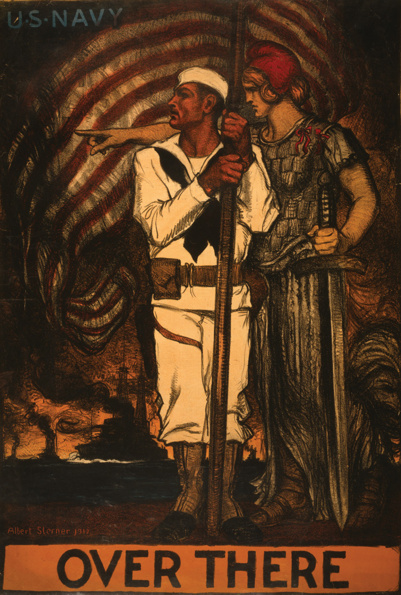This 1917 poster depicts a US sailor being sent overseas by the goddess of liberty. It reflects the belief among Americans about the purity of their motives in World War I.
The Progressive Era’s faith in government regulation had led to a host of domestic reforms under the Wilson administration. Although these reforms had dominated Woodrow Wilson’s first administration, they quickly gave way to wartime mobilization. Even as the nation began to prepare for war, the Progressive faith in the positive momentum of history continued. Americans demanded, and Wilson promised, that the United States would not only would turn the tide of war against German aggression but also would ensure that this be the last war of its kind. Women and minorities agreed to support their nation’s fight to spread freedom and democracy, but demanded that these principles be applied in their homeland. Despite the hastening of Progressive reforms such as women’s suffrage, the nation would retreat from Progressive ideals in the postwar summer of 1919 that was dominated by anti-Communist hysteria and racially motivated violence.
By 1920, the nation returned to its isolationist orientation. Business and political leaders focused on promoting development and only indirectly addressed the difficulties of reconstruction in Europe and the rest of the world. For Europeans, World War I would claim the lives of millions and ignite revolutions in its wake. Even European nations that had not been dissolved politically had been at least partially transformed by the experiences of war at home and abroad. For most Americans, the experiences of the war were far less traumatic. Only directly involved in the conflict for nineteen months, the United States was never under any credible threat of invasion. Ten times as many Americans would lose their lives in an influenza pandemic that occurred at the end of the war than on the battlefields of Europe. Yet for most Americans, the war and the revolutionary changes that occurred in its aftermath forever altered the way they viewed the rest of the world, labor relations, and the role of government. In addition, the moralistic tenor with which many viewed their participation in the war shaped their ideas about America’s role in the world and would have a profound effect on the way they viewed a second war that erupted two decades later.
Wilson pledged to make the interests of farmers and laborers a leading priority, promising reforms that would “shield” these groups from the negative consequences of industrialization and the abuses of monopolies. The president supported the Clayton Antitrust Act of 1914, which clarified the definition of illegal business practices. The act declared that any action that reduced competition in the marketplace would be subject to federal penalties, as determined by the newly created Federal Trade Commission (FTC)A federal agency created in 1914 to enforce antitrust legislation and other measures designed to prevent monopolies and unfair business practices. The FTC also seeks to defend consumers from fraud and deceptive business practices.. The FTC was charged with enforcing federal regulations, such as a section of the Clayton Act that prohibited individuals from serving as members of a corporation’s board of directors if they had a conflict of interest. For example, if an individual was a member of Ford’s board of directors, he could not also serve another automaker in that capacity. In the past, various holding companies had conspired to form trusts by appointing the same individuals to multiple boards as a way of conspiring to eliminate competition. The Clayton Act also required government approval for mergers and acquisitions to prevent the growth of monopolies, and it banned a variety of unfair business practices. For example, a company could no longer require one of its suppliers to refuse the business of its competitors as part of the price of doing business. In the past, courts had interpreted antitrust laws such as the Sherman Act against labor unions. For example, the leaders of the Pullman Strike of 1894 were declared in violation of antitrust laws when their wildcat strike began affecting other rail companies. For this reason, the Clayton Act specifically exempted labor unions from its provisions.
The Clayton Act was inspired by the work of Progressive attorney, author, and later Supreme Court Justice Louis BrandeisAuthor, attorney, and the first Jewish appointee to the US Supreme Court. A leading private university in Massachusetts was named in honor of Brandeis, who was known as a someone who exposed corruption in the financial industry and defended consumers against corporate interests.. Known as “the People’s Lawyer,” Brandeis authored the influential book Other People’s Money, which exposed the techniques used by trusts to create monopolies and destroy small businesses. Brandeis showed how men who sat on the boards of banks, as well as various trusts, were able to manipulate the money supply to enrich themselves. The book also demonstrated the artificial limits that were placed on the supply of capital and the way these methods discouraged consumer spending and investment. At their worst, these trusts destroyed innovation by rewarding companies that were less competitive but enjoyed powerful connections. Brandeis also fought on behalf of the right of free speech—a liberal cause that was still gaining acceptance in the early twentieth century. His nomination to the Supreme Court was controversial both because of his liberal politics and because he was Jewish in an era of virulent anti-Semitism. Today, most scholars of legal history consider Brandeis to be one of the most capable justices in US history. In an era when protections of free speech and privacy were considered secondary and conditional to other interests, Brandeis helped to construct the modern legal framework that protected these freedoms as inherent rights of all US citizens.
Figure 5.2
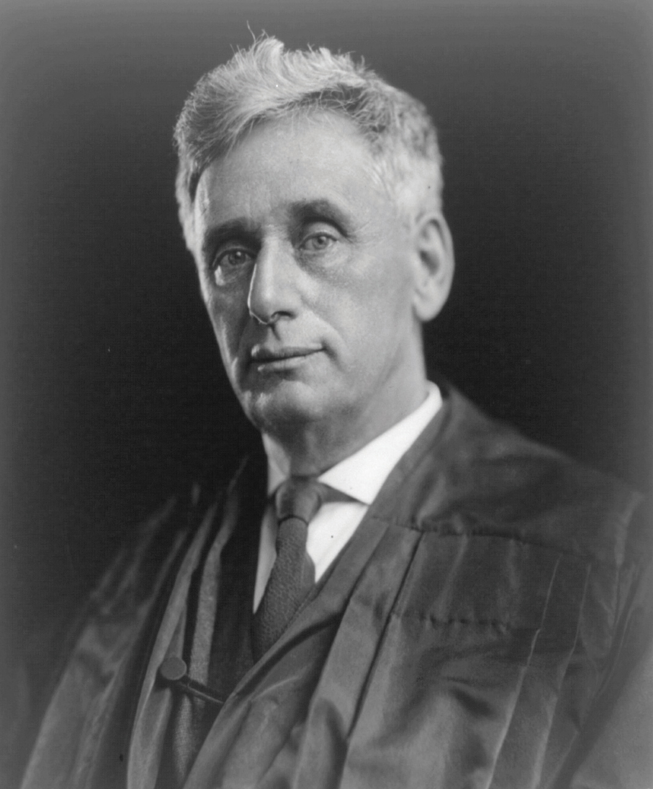Progressive attorney Louis Brandeis was the first Jewish appointee to the US Supreme Court. A fellow Justice called Brandeis a “militant crusader for social justice whoever his opponent might be.”
Wilson recognized that the nation’s banking system needed federal support to provide greater stability, especially as a number of prominent banks failed despite the relative financial tranquility of the early 1900s. In each instance, bank failures led to the loss of depositors’ money and panicked selling on Wall Street. In an effort to provide greater regulation and stability to the nation’s banking system, the Federal Reserve Act of 1913Created the modern central banking system of the United States. The Federal Reserve acts as a central bank for the government and establishes monetary policies that affect the economy such as the federal funds rate—the interest rate commercial banks pay to borrow money. created the Federal Reserve and twelve district banks scattered throughout the nation. The Federal Reserve has authority over policies such as the amount of money the government should print. The role of the Federal Reserve also includes authority over monetary policy, including the establishment of interest rates that member banks pay to borrow money from each other. The Federal Reserve can lower this rate to spur investment or raise it to limit inflation.
Some Progressives supported a program whereby the federal government would also require strict regulation of private banks and provide insurance against bank failures. However, these more active government measures would not be approved until after the nationwide panic that helped create the Great Depression. The powers granted to the Federal Reserve expanded during these years, and the institution continues to manage the nation’s banking system by regulating the flow of credit to banks. As a result, decisions made by the Federal Reserve have a direct impact on businesses and the general public.
The Populists of the 1890s had sought the enactment of a modest federal income tax that would apply only to the wealthy. Previous attempts to add direct taxes on the wealthy had been challenged in the courts, leading to the decision to seek a constitutional amendment specifically authorizing a federal income tax. With the support of the Progressives, the Sixteenth Amendment was approved by Congress in 1909 and ratified by the states in February 1913. That fall, Congress approved an annual tax on all those who made more than $4,000 per year. Because most workers made about $80 per month, only the wealthiest 5 percent of households paid any federal taxes the following year. In addition, the tax rates were quite modest, ranging from 1 percent for those who made just above $4,000 to a maximum rate of 7 percent for the wealthiest Americans. Conservatives feared that these relatively modest taxes would be the harbinger of more assessments. In 1916, they fought against a proposed tax increase and an additional tax on corporations. They were especially angered by the creation of an estate tax that was levied when property valued above a certain amount changed hands from a deceased individual to his or her children. Even after tax rates increased and the exemption was lowered, most Americans still did not earn or own enough property to come under the terms of the new law. Most believed the feature requiring those with higher incomes to pay higher rates—a feature known as progressive taxationA system where the rate of taxation increases for individuals who earn more money. For example, incomes between $50,000 and $80,000 might be taxed at 20 percent, while incomes between $300,000 and $1,000,000 would be taxed at 35 percent.—was fair. As the size of the federal government increased in future decades, tax rates also increased while the exemption level declined. As a result, larger percentages of Americans were required to pay federal income taxes, resulting in greater public awareness regarding federal tax policies.
A second goal of the Populist Party of the 1890s was a constitutional amendment requiring direct election of US senators. Although the Populists had failed to pass this measure, their ideas continued to generate support leading to the approval of the Seventeenth Amendment in April 1913. The amendment ended the practice whereby state legislatures selected the delegates to the Senate. Instead, popular elections in each state would determine each senate seat. Other goals of the Populists were realized during the early years of the Wilson administration, such as the Adamson Act establishing the eight-hour day for railroad workers. The federal government also approved a measure providing financial compensation and reimbursement of medical expenses for laborers injured at work, although the measure only applied to federal employees.
Laborers, unions, and Progressive reformers worked at the state level throughout the early 1900s and successfully passed a growing number of mandatory compensation laws that were similar to the protections federal employees enjoyed. States also passed a host of laws mandating maximum hours and minimum wages. However, tens of thousands of employees continued to be injured or even killed at work each year. These industrial casualties led to demands for workers’ compensation laws that would apply to private industry much like the federal laws that protected federal workers. In addition to a desire to improve workplace safety, part of the reason Progressives favored these reforms was a desire to thwart the growth of radicalism and the Socialist Party. They also hoped to prevent labor strikes, which continued to increase in number, duration, and intensity. By 1916, the Industrial Workers of the World (IWW) had nearly 100,000 members. Not all of these women and men approved the Wobblies’ ultimate goal of a general worker’s revolution. However, most at least viewed the IWW as favorable alternative to the more conservative unions such as the American Federation of Labor (AFL).
In many areas where the IWW led strikes, such as the rubber mills of Akron, Ohio, and among the lumberjacks in the Dakotas, the AFL was nonexistent. The IWW sought to organize all workers regardless of race or gender, including the women of the Akron mills. Contrary to the notion that women did not enter the industrial workforce in large numbers until World War II, women represented over 20 percent of workers in the rubber industry at this time. The IWW also organized the men of the lumber camps in Minnesota, as well as the immigrant iron miners of the North Star State. These IWW-sponsored strikes began in 1916 with the sawmill workers and spread into the hinterlands where the men whom the lumber companies pejoratively labeled “timber beasts” lived. Government officials acceded to nearly every demand of the coal companies, mobilizing police to arrest labor leaders and even passing laws against the circulation of pamphlets. Newspapers also agreed to print a variety of stories about lumberjacks hiding caches of weapons and committing acts of terrorism with little effort to verify the accuracy of their reports.
Because some workers, IWW leaders, and Socialist agitators had acquired arms or had advocated violent resistance in the past, nearly every story that was printed became at least somewhat believable in the public mind. The IWW fought back when attacked by sheriffs and representatives of the lumber companies. The result was a number of shootouts, such as one in Washington state that left dozens wounded and seven dead in 1916. After these violent confrontations, the lumber companies received even greater assistance from law enforcement officials, which helped them crush the strikes and the IWW. Minnesota created a Commission of Public Safety that rounded up and arrested the remaining labor leaders. The state legislature even passed a law criminalizing the spread of information by those whose beliefs were considered radical or dangerous by government officials.
The most famous labor strikes of this era occurred in the minefields of Colorado and West Virginia. The Paint Creek-Cabin Creek Strike began in the spring of 1912 when unionized workers in West Virginia demanded a pay increase and coal operators retaliated against the union. The conflict quickly spread to the nonunionized coalfields and soon became a contest to determine whether workers had the right to organize and bargain collectively. A series of skirmishes between miners, state troops, police, hired “detectives” who were employed by the coal company, and men who came to the area as strikebreakers gripped the nation’s headlines for an entire year. The federal government would later hold investigations into the actions of two different West Virginia governors who sided with the coal companies. This was the first time the federal government had launched an official investigation of the actions of a state government in US history—a crucial turning point in the history of states’ rights versus federal authority. Most investigators believed that the state used heavy-handed tactics to help thwart the unions and the miners. Recent historians have further detailed the way that coal companies instigated violence by men hiring armed detectives to intimidate the workers. More than 200 miners and labor organizers were imprisoned, including the eighty-six-year-old union organizer “Mother” Mary Harris Jones. Many of these labor organizers faced military court-martials, while others had been imprisoned without charges. Although most, including Jones, were eventually released, the state had clearly acted on behalf of the coal operators who successfully prevented the spread of unionization throughout Appalachia.
Jones was ordered by the governor to leave the coalfields of West Virginia. She complied but did not retire from the work of representing miners. The next year, she could be found walking to and from various mining communities in the mountains of Colorado, representing the IWW and spreading news and ideas about labor activism. The Rockefellers owned a variety of mines in central Colorado where immigrant and native-born workers had been used against one another in the past to thwart labor activism. Due to the efforts of Mother Jones and the leaders of the United Mine Workers, the Colorado miners launched one of the most well-organized strikes in US labor history between September 1913 and April 1914. In that month, state troops attacked an encampment of miners and their families. The event is known today as the Ludlow MassacreThe deadliest incident during an extended strike by coal miners, the Ludlow Massacre occurred when Colorado state troops fired on a miner’s encampment. and includes the deaths of an estimated two dozen men, women, and children.
Figure 5.3
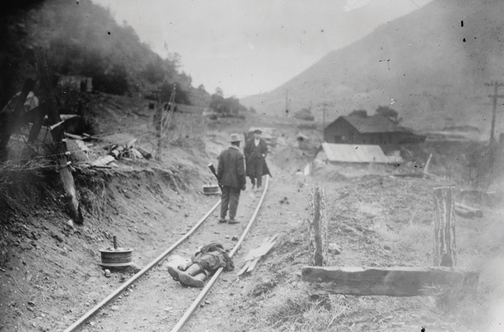One of the photos depicting the violence common during the Ludlow Massacre. Here, one of the miners stands next to one of his comrades who was killed.
The Colorado miners protested the long hours and low pay they were forced to endure, as well as the practices of the coal companies, which charged high rents and food prices in the mining towns that were ruled by company officials. Jones was denounced in the Senate as the “mother of all agitators.” Jones reminded the Senate that at her age, she could only hope to be the “grandmother of all agitators.” She countered that the conditions within the coal industry had created the strikes, not her sojourns between the camps. The coal companies convinced the state to arrest Jones and send troops. They also hired hundreds of their own private detectives armed with automatic weapons. Many of the miners had already acquired weapons of their own and vowed to fight back. The nation again watched in horror as men killed for coal, viewing the arrival of the National Guard and other federal troops as the only way to restore order.
At first the miners cheered the arrival of guardsmen, believing the governor had sent the troops to protect them from the hired guns of the coal companies. Instead, the soldiers surrounded coal camps. The result was a series of well-publicized massacres where soldiers set the men’s tents on fire to force their compliant surrender. Given the tendency of the miners’ families to hide in the tents for safety, this was an effective tactic to control the miners at least in the short term. After the Ludlow tent colony was set on fire, eleven children and two women were burnt to death while a dozen men were killed or wounded trying to escape or turn back to rescue their families.
News of the Ludlow Massacre bred a new spirit of worker solidarity and made the guardsmen question their orders. Area miners began walking off of their jobs and joining the fight, while many National Guard units, themselves composed primarily of working-class men, set down their weapons and denounced the governor. However, federal troops had previously been ordered into the coalfields, and at this critical moment, they arrived and arrested the leaders of the movement. The strike had failed at a tremendous cost to the state and the coal company, while dozens of miners and their families had been killed. Labor leaders and those who opposed unions soon launched a second battle, this time for historical memory. Future activists preserved the memory of the Ludlow Massacre as evidence of corporate-government collusion and the importance of protecting the right of workers to organize. Opponents of unions continued the nineteenth-century tradition of blaming organized labor for the violence that occurred in the wake of yet another strike.
Support for racial equality remained the most obvious shortcoming of the Progressive movement, although a small number of whites joined or supported organizations dedicated to ending lynching and segregation. The Democrats remained the party of white supremacy in the South. In some areas, such as southern Indiana and Illinois, the Democrats waged local campaigns that channeled the message of Southern Democrats during Reconstruction who swore to take back their government by restoring white rule. In these areas, new patterns of migration led to contested neighborhoods where black workers in cities such as East St. Louis purchased homes in previously all-white neighborhoods and took jobs in previously all-white factories. The 1917 riots in the Illinois suburb of East St. Louis may have been the most deadly of its kind in US history. Official figures list thirty-nine black and nine white citizens as being killed during the East St. Louis Riot, but these figures were questioned at the time, and some historians estimate that at least a hundred more might have been killed. Several thousand black residents simply fled the city while hundreds of homes in black neighborhoods were destroyed. These riots were soon overshadowed by dozens of similar race riots that followed in 1919 and 1921. The nation seemed numb to the violence of these riots, perhaps related to the astounding destruction of World War I and a worldwide influenza outbreak that killed 20 to 40 million between 1918 and 1919.
Figure 5.4
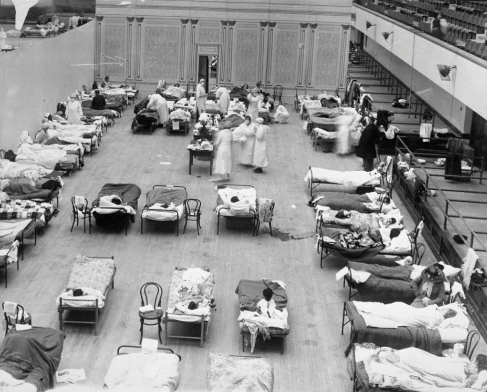Volunteer nurses in Oakland, California, tend to victims of the influenza pandemic who were placed inside a public auditorium and assisted by the American Red Cross.
A much smaller race riot that occurred nine years prior in a different Illinois community took on a greater symbolic meaning than the carnage in East St. Louis. On August 14, 1908, a white woman accused a black man in Springfield, Illinois, of sexual assault. The facts in the case quickly became immaterial as an angry mob gathered at the prison demanding that the suspect be released to them so that they might immediately lynch him without a trial. When the mob learned that the police had anticipated trouble and transferred the accused man to another jail, the mob decided to set fire to a number of black-owned businesses. Not satisfied, they set the homes of forty black residents on fire and lynched a barber who had attempted to defend his home. The next evening, the mob gathered again and charged a line of police and soldiers who were guarding the now homeless black residents of Springfield. Thwarted again by men with guns, the mob decided to lynch an elderly black man who had lived in Springfield most of his life. The man was singled out because he had married a white woman three decades prior. Fifty black families were suddenly homeless in an attack that demonstrated a mania to attack anyone who was black. Sadly, attacks such as these had occurred in nearby northern cities such as Evansville, Illinois, and Cincinnati, Ohio. However, the Springfield riot shocked the nation as two black men who had been accused of no crime had been brutally murdered in the shadow of Abraham Lincoln’s historic home. If something like this could happen in Springfield, most Americans finally recognized, it could happen anywhere.
In response, a group of liberals of various racial backgrounds formed the National Association for the Advancement of Colored People (NAACP)Established in 1909 in the wake of a race riot in Springfield, Illinois, the NAACP quickly became the leading civil rights organization. In its early years, the NAACP sponsored a host of legal challenges against segregation. in 1909. Hundreds of local, state, and even national civil rights groups had come and gone since Reconstruction. The NAACP was different for a number of important reasons. It attracted a broad and diverse nationwide membership. Although most of its national officers in its formative years were liberal whites, the local chapters of the NAACP were led by officers who were predominantly African American. At the national level, W. E. B. Du Bois was the only black officer appointed to lead the NAACP when it was founded. He was given a “token” position as the editor of the NAACP’s publication department, a position that was tantamount to putting together a newsletter that would highlight the actions of the new organization. However, Du Bois soon became the most influential member of the organization when he used this position to establish The Crisis—the official publication of the NAACP. Much to the chagrin of some of the more conservative white officers of the NAACP at this time, The Crisis was uncompromising in its demand for equality and unconcerned with accommodating the views of those who advocated moderate change. While these national leaders espoused their ideas through correspondence with chapter leaders and concerned themselves mostly with clerical matters and the collection of monthly dues, Du Bois and The Crisis became the effective voice of the NAACP.
Figure 5.5

The very first image of The Crisis, the official journal of the NAACP.
The strength of the NAACP was in its local chapters. These grassroots organizations won a series of small but important decisions against segregation in various Northern and Western cities during the 1910s. The most significant NAACP victory of this decade occurred in the Border South town of Louisville, Kentucky, in 1917. The city had passed an ordinance that legally mandated residential segregation. Other cities such as St. Louis and Baltimore considered similar measures that won the support of most white voters. Had the Louisville NAACP not challenged the segregation law as a violation of the Fourteenth Amendment, most major cities and hundreds of smaller communities would have likely passed similar ordinances. Racial strife regarding housing exploded in violence that killed nearly forty people in Chicago in 1919. That year, the violence spread to as far north as Connecticut and led to race riots in Western towns such as Omaha where the mayor was nearly lynched in an unsuccessful attempt to protect a black man from a mob of at least 4,000. After riddling the man’s body with bullets, the men lynched his corpse, drug his body through the streets, and then set it on fire. Despite dozens of photos clearly showing the faces of the mob, the only men convicted of any crime in Omaha were those accused of damaging the courthouse.
Racial conservatives defended the Louisville segregation law as racially neutral because it forbid whites from living in predominantly black neighborhoods just as it prevented black families from buying homes in white neighborhoods. The leaders of the Louisville NAACP understood that most whites nationwide supported the law and decided to frame their arguments as a violation of property rights. As a result, they tested the law by having one of their leading white members sell a house to the president of the local chapter who was black. When the law prevented the black man from taking ownership of the house he had purchased, he backed out of the contract, leaving the white property owner empty-handed. Even supporters of the law marveled at the genius of the Louisville NAACP to create a situation where a law intended to mandate racial segregation had infringed on the property rights of a white landowner. National NAACP president and constitutional lawyer Moorfield Storey argued the case on behalf of the bereaved white landowner, arguing that his freedom to dispose of his property had been abridged by the segregation law. The Supreme Court agreed that the law was an unconstitutional abridgement of the government’s responsibility to protect private property rights, although the justices added their own editorial support for residential segregation in the majority decision. As a result, the 1917 case of Buchanan v. WarleyA lawsuit sponsored by the Louisville NAACP that challenged and defeated the city’s residential segregation law. This was a significant victory because a number of other cities such as Baltimore and St. Louis were about to pass similar laws. outlawed residential segregation laws but did little to confront the idea that white and black Americans should not live in the same neighborhoods.
The NAACP was less successful with its attempts to challenge directly the legal doctrine of separate but equal in the South, although the organization did strike down the legality of the Grandfather Clause that had exempted whites from laws restricting voter registration. NAACP chapters in Maryland and Oklahoma worked together and won a series of legal challenges to their state constitutions, which culminated in the Supreme Court decision in Guinn v. the United States (1915). Although the court ruled that the Grandfather Clause violated the Fifteenth Amendment, other provisions restricting black suffrage continued just as other methods of maintaining residential segregation survived Buchanan v. Warley.
One of the greatest successes of the NAACP nationwide was the ability of local chapters to prevent or restrict the showing of a racially charged film that became the first Hollywood blockbuster. Birth of a Nation was a historically themed drama depicting Reconstruction as a tragic era where former slaves were foolishly permitted to vote and hold office. Along with a coterie of corrupt white liberal carpetbaggers bent on destroying the South, the film suggested that former slaves who were suddenly elevated to positions in government demonstrated incompetence and depravity. The film portrayed white women being ravaged by black men while the would-be heroes of the region, the former Confederates, were barred from their natural role as leaders and protectors by an invading army of Yankee soldiers. In the end, the Ku Klux Klan emerges in the film as the “protectors” of the South, and white Yankees and Southerners experience a rapprochement based on a return to normalcy through mutual recognition of white supremacy as an inherent truth. The silent film began with a screenshot displaying a quote of the sitting president and former professor of history Woodrow Wilson. “The white men were aroused by a mere instinct of self-preservation,” viewers were informed, “until at last there sprung into existence a great Ku Klux Klan, a veritable empire of the South, to protect the Southern country.” The quote was taken from one of the leading US history textbooks, one that Wilson had authored and that reflected the dominant view of Reconstruction by white historians at this time.
Figure 5.6
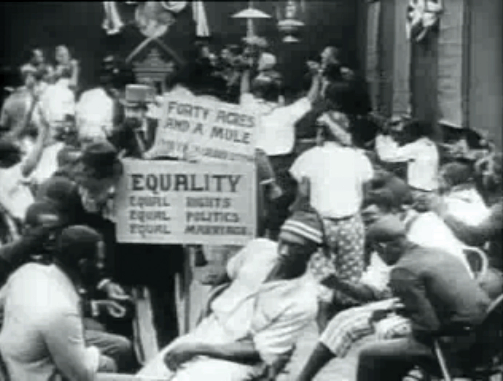A still image from the film Birth of a Nation. This film was the most-viewed movie in Hollywood history and was shown in theaters for several decades. The movie depicted the Klan as heroic, black voters as unprepared for citizenship, and the unification of the North and South based on a common recognition of Aryan supremacy.
African American historians countered this heroic view of the Klan with their own interpretations of the past. In addition, scores of local NAACP chapters protested against the racist implications of the film. In dozens of cities and even a handful of states such as Kansas and West Virginia, white and black members of the NAACP passed special laws barring the showing of films that might incite racial hatred. These small victories united individual chapters and may have accounted for the rapid growth and sustainability of the NAACP in an era when attempts to pass national legislation against Jim Crow and lynching were repeatedly blocked by Southern Democrats. African American author and filmmaker Oscar Micheaux responded to the commercial success of Birth of a Nation by directing films that depicted black history from Africa to America. Micheaux directed more than forty movies that employed black actors and actresses and presented the black perspective of African American history. Many of Micheaux’s films and books were inspired by his experience as a homesteader in South Dakota. In fact, it was his third novel about a black homesteader in this region that led to his “discovery” by a black-owned film company that was founded in Lincoln, Nebraska, before moving to Los Angeles.
Figure 5.7 Pioneering Black Filmmaker Oscar Micheaux
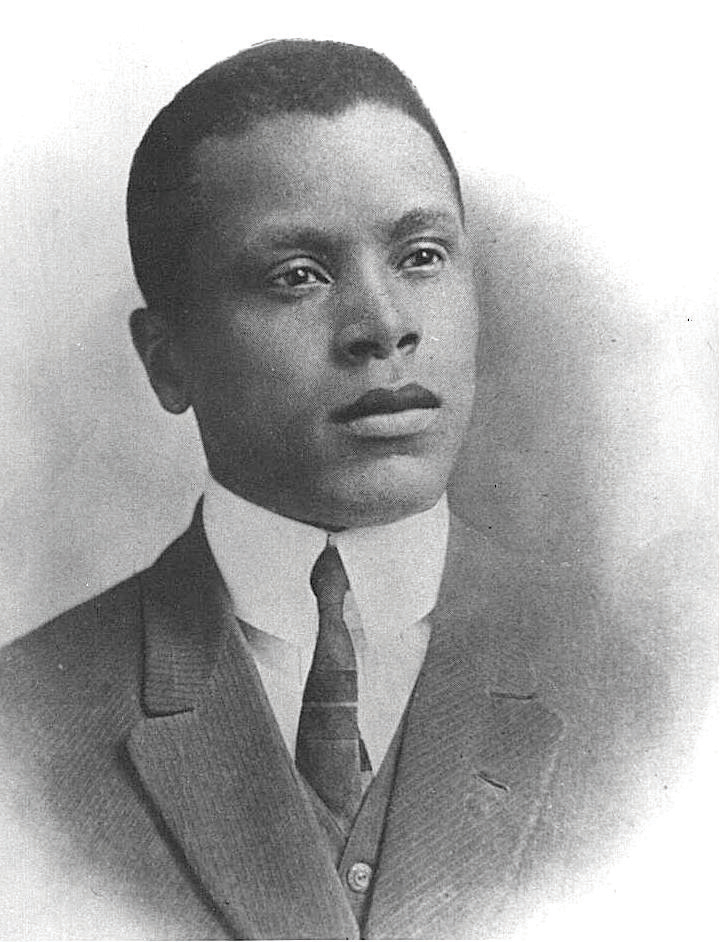Micheaux also formed his own commercial studio based out of Chicago and produced films such as The Homesteader and Within Our Gates. These were among the first “race films”—that is, movies made by black filmmakers for black audiences. Micheaux strictly guarded the independence of his projects and created dramatic films that portrayed black history, as well as dramas featuring dignified black women and men who played the roles of heroines and heroes rather than fools or villains. As a result, these early years are sometimes called the “golden era of black cinema.” However, experts in black film history, such as modern director Melvin Van Peebles, have also demonstrated the tremendous sacrifices that were made by these early pioneers. Black film producers such as Micheaux surrendered the profits their creative energies might have produced making comedies. The black actors and actresses who rejected the stereotypical roles Hollywood offered also rejected the wealth and fame some black actors achieved. For example, Lincoln Perry earned over $1 million playing the character of Stepin Fetchit. Although Perry was both talented and well educated and could have played a variety of characters, his on-stage buffoonery appealed to racist images at a time when black actors and actresses in Hollywood were limited to roles as cowardly brutes, submissive fools, and contented servants. Race films themselves rarely made money, but from the perspective of black audiences, the sacrifices of these pioneers offered a few precious seconds of humanity on the silver screen.
Austria-Hungary was a divided and crumbling empire—so much so that its government actually had two different and often competing centers of government. Seeking to reassert its authority over the Balkans, Austria-Hungary seized control of Bosnia and Herzegovina in 1908. This action deeply angered many Slavic people throughout the region. Tensions remained high throughout the Balkans and peaked in June 1914 when Austria-Hungary’s Archduke Franz Ferdinand was assassinated by an advocate of Slavic nationhood and independence. The individual who committed the deed was tied to a nationalist movement based out of the independent nation of Serbia. This group and many others supported a growing independence movement among ethnic Serbs within Austria-Hungary. In addition to the Serbs, nearly a dozen other subject peoples representing various ethnic groups sought to free themselves of imperial rule and create their own independent nations. Facing internal revolt that threatened the implosion of their empire, the leaders of Austria-Hungary felt that they must make an example of Serbia. However, the situation was complicated by an alliance between Serbia and Russia that required each nation to come to the other’s defense.
Figure 5.8
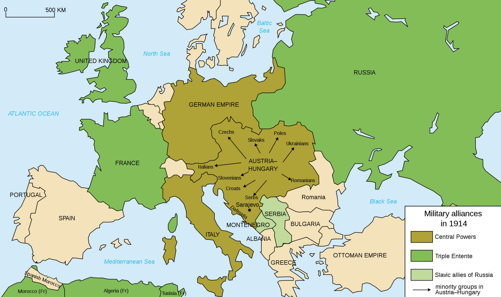Europe was dominated by a few leading empires, each of which had a number of alliances with other European empires. This map demonstrates the emergence of two alliance systems, the Triple Entente and the Central Powers. It also indicates the divisions within Austria-Hungary among various ethnic groups. Notice the position of Serbia, a small nation that was allied with Russia.
The political and diplomatic situation throughout Europe was equally complex and volatile. Imperial rivalries, territorial conflicts, arms buildups, and a series of military alliances created the possibility that a regional conflict like what was emerging in the Balkans might expand until it involved nearly all of the leading armies of the world. Unresolved conflicts and historic grievances throughout Central Europe framed the tensions. Prussia (the dominant state of what would become modern Germany) had defeated France in 1871 and acquired the formerly French territory of Alsace-Lorraine. Neither of the countries considered the matter settled, and both nations garrisoned an increasing number of troops along their common border. Each nation also formed alliances with neighboring nations. These alliances discouraged either from precipitating a war to seize more territory, yet they also increased the likelihood that any war between the two nations would expand beyond France and Germany.
The forts and troops along the German-French border represented only a fraction of the rapidly expanding armed forces of Europe in early 1900. England, France, Germany, Russia, Italy, Belgium, and other imperial powers sought to expand their global empires. Most of these local battles were waged by and on colonized peoples. European conquest was dependent on exploitation of long-standing political, ethnic, and religious divisions. Even as millions throughout Africa and Asia attempted to maintain their independence, others found themselves fighting on behalf of Europeans for a variety of reasons. Europeans were likewise divided, and imperial competition led to dozens of small conflicts between each of these nations along the contested borders of their overseas colonies. However, in each case, great efforts were made to make sure that warfare did not spread into Continental Europe. The brief Franco-Prussian War was the only war fought in Europe between these nations between Napoleon’s defeat in 1815 and the outbreak of World War I ninety-nine years later. From the perspective of Africans, Asians, and many peoples in Southern Europe and the Middle East, historians who refer to this period as a time of peace demonstrate a callous indifference to their struggle. From the perspective of many Europeans, the nineteenth century was one of territorial expansion while avoiding direct armed conflict with other imperial powers.
Diplomacy was key to maintaining the status quo in this imperial conflict, just as naval power was key to expansion. Britain maintained a navy that was more than double the size of its next closest rival. However, surface ships were vulnerable to submarines that were nearly impossible to detect until the development of effective sonar technology in World War II. Germany led the way in developing a modern submarine fleet, but the rapprochement between Britain, France, and Russia was less a response to the growth of German naval power than the economic and military potential of this newly unified nation on the continent of Europe. As the German economy and military modernized and expanded, these three historical rivals formed military alliances intended to neutralize potential German territorial ambitions. From the Germans’ perspective, these alliances appeared to be a concerted effort to isolate and perhaps even attack their nation. The Germans responded to what they labeled einkreisung (encirclement) by strengthening their alliances with the Ottoman Empire and Austria-Hungary. Unfortunately for Germany, these two allies were both declining empires, while Britain, France, and Russia were gaining in economic and military power each year. As a result, by the early 1900s, some in the German military were calling for a “preventive strike” that might reduce the territory of rivals such as France before the comparative military strength of Germany and her allies declined any further.
From the perspective of the German chancellor, the conflict in the Balkans seemed like the ideal pretext to launch such an attack under the guise of supporting Germany’s beleaguered ally. If Austria-Hungary could be induced to attack Serbia, Russia would be bound by treaty to mobilize its army in defense of tiny Serbia. Germany could then declare war on Russia in the name of defending its own ally. Because France was an ally of Russia, this might also serve as a pretext for a quick German attack on France. This offensive into France was harder to justify; however, France had attacked Germany in the recent past. Given the long-standing grievance between Germany and France, a preventive strike might be vindicated as a necessary defense against the French. After all, France might have viewed the German deployment of troops to the south and east as an opportunity to seize its lost territories. Long before the assassination of Franz Ferdinand, German generals had devised a plan they believed would allow them to defeat both France and Russia. Using a quick strike through Belgium, rather than along the heavily armed German-French border, German forces could outflank the French army and seize Paris within six weeks. The plan was based on the assumptions that Russia’s massive army would mobilize slowly and that the attack of France would succeed, allowing Germany to redeploy its victorious troops to the east before the bulk of the Russian army could mobilize against Austria-Hungary. Britain was the wildcard in such a scenario, but the Germans were willing to gamble that Britain would risk its own security to defend France, which had been their chief rival throughout history.
Had it not been for the intervention of Germany, it is doubtful that the conflict in the Balkans would have led to war. If Austria-Hungary invaded Serbia while Germany stood idle, Russia would easily crush Austria-Hungary. Such a defeat would encourage Austria-Hungary’s rivals in the Balkans, as well as the various groups within their empire who sought independence. No one understood this situation better than the leaders of Austria-Hungary, who treaded carefully in the wake of their assassinated leader. They felt honor bound to issue a list of demands to Serbia demanding an investigation and various measures to prevent future attacks on their country by anarchists and Serbian nationalists. When Serbian officials agreed to nearly every demand, many believed the conflict would be resolved through diplomacy. After all, dozens of previous conflicts that appeared much more serious had been peacefully resolved in recent decades. However, German leaders pushed Austria-Hungary to declare war on Serbia. German officials promised unconditional military support for Austria-Hungary if Russia or any other nation joined the conflict. From the perspective of Austria-Hungary, this unsolicited German assistance could help them crush their foes in the Balkans and secure their empire against various nationalists and dissidents within their own borders.
From the German perspective, offering this assurance (known by historians as the “blank check theory”) was a means by which they might later attack Russia and France in the name of defending Austria-Hungary. Had Germany been victorious, this outcome may have become the official historical interpretation of the origins of the war. Instead, Germany’s decision to invade France via neutral Belgium inspired the anger of England and would later be cited as one of the leading justifications for US intervention. After receiving Germany’s unconditional support, Austria-Hungary declared war on Serbia on July 28, 1914. Russia responded by mobilizing its forces as expected; Germany then kept its promise by sending troops to aid Austria-Hungary. Germany also launched its secret plan to invade Belgium as a means of attacking France. Unfortunately for Germany, England honored its treaty to aid France. The Ottoman Empire honored its commitment to Germany, as did Bulgaria. Because of these treaties and alliances, German leaders had engineered a situation where a conflict in the Balkans led into a global war. World War I placed the Central PowersOriginally based on the Triple Alliance of Germany, Austria-Hungary, and Italy, the Central Powers were nations that fought together against the Allied Powers during World War I. Italy joined the war on the side of the Allied Powers, while the Ottoman Empire and Bulgaria joined the Central Powers. of Germany, Austria-Hungary, the Ottoman Empire, and Bulgaria against the Allied PowersOriginally based on the Triple Entente of France, Britain and Russia, the Allied Powers were nations that fought together during World War I against the Central Powers. The Allied Powers grew to include Italy, Japan, Belgium, and the United States. of Britain, France, and Russia. By 1917, the United States also joined the Allied Powers. Italy originally refused to join the conflict, despite its treaty with Germany. Italian neutrality proved short lived, however, as opportunistic Italian leaders later joined the Allied Powers when it became apparent that doing so might lead to territorial acquisition.
The fighting ended in November 1918, and the Treaty of Versailles was signed the following year. One of the provisions of this treaty required the defeated Germans to accept all the blame for starting the war. While it is difficult to find reasons against assigning primary blame to Germany, it is important to consider the culpability of other nations. It is also important not to confuse the aims of Germany in 1914 with those of Hitler in 1939. In World War I, German leaders hoped to fight a quick and limited war against France, similar to the Franco-Prussian War of 1871. They believed they could expand their territory and unite their people in such a conflict. They also believed that failure to take the initiative would leave Germany increasingly vulnerable to an attack by France or another rival power in the future. Germans feared that this attack might come when its own allies (the crumbling empires of Austria-Hungary and the Ottoman Empire) would not be in a position to aid them. The German chancellor did not predict that England would enter the war to defend France or that the United States would join the fight in 1917. Most importantly, no one in 1914 understood that the war would turn into a nightmare of attrition that would leave 9 million dead. As a result, most European leaders and a surprising number of European troops welcomed the news of war during the fall of 1914. Inspired by a youth spent playing with toy soldiers and reading dime novels full of sanitized images of war, most men viewed war as a grand coming-of-age adventure and a test of their manhood. Imagining the future glory of their nation and themselves in the fall of 1914, millions of grown men promised their wives and children that they would return home as heroes by Christmas. A third of those who survived returned with crippling injuries, while the rest returned with a chastened perspective about the glory of war.
The Mexican Revolution began in 1910, leading to the removal of the dictatorial government of President Porfirio Diaz. Many Mexican citizens supported Diaz’s successor, Francisco Madero, and his government’s support of democratic reforms. Among Madero’s supporters was a former outlaw known as Francisco “Pancho” VillaA leading general during the Mexican Revolution, Pancho Villa received American assistance until the US government officially recognized the government of Venustiano Carranza as the legitimate government of Mexico. In retaliation for what he viewed as betrayal, Villa attacked American citizens and the town of Columbus, New Mexico., who had received weapons and other assistance from the United States due to his opposition of Diaz. However, Madero was murdered in 1913, and General Vicotiano Huerta seized power. After Madero’s death and for the next four years, a civil war raged between the supporters of Huerta and various other political and military leaders. Villa opposed both Huerta and his chief rival, Venustiano Carranza. However, Villa believed that Carranza was the better of the two and agreed to help him seize power from General Huerta in 1914. Carranza held off other challengers and was eventually given the official recognition of the Wilson administration. US officials recognized that Carranza’s government was not democratic, but hoped his dictatorship would at least lead to greater stability in Mexico. Villa resolved to continue fight in hopes of ousting Carranza, a decision that led the US government to withdraw its aid to Villa’s supporters. The Wilson administration feared the only alternative to Carranza was civil war. From Pancho Villa’s perspective, he and those who favored a genuine revolution of the people had been betrayed by both the United States and the new government of Mexico. Villa and his supporters (known as Villistas) vowed to fight on, even though they numbered only a few thousand men with dwindling supplies.
Americans of Mexican descent were keenly aware of the issues facing their homeland. Revolutionary philosopher and leftist political activist Ricardo Flores Magòn had mobilized Mexican Americans against the Diaz regime. After serving a prison sentence for attempting to start an armed anti-Diaz uprising in Tijuana and throughout Baja California, Magòn also began speaking out against the discrimination Mexican Americans faced in their own country. The vast majority of Mexican Americans, from fieldworkers to landowners, rejected most of Magòn’s more militant ideas. However, his Los Angeles-based newspaper Regeneraciòn inspired a small number of committed followers who dedicated themselves to a revolutionary plot known as Plan de San DiegoA revolutionary scheme of Ricardo Flores Magòn that called for the recapture of American land that once belonged to Mexico.. The original intent of this plan was to support an armed revolution that would lead to the formation of an independent republic from the US states that had once been a part of Mexico. Whites in Texas, New Mexico, California, Colorado, and Arizona would later believe that this revolutionary plot to capture their states had been planned by Germans or other outsiders. However, it is now clear that the declining social and economic condition faced by people of Mexican descent in these states inspired at least 1,000 men to pledge their loyalty to Plan de San Diego.
Many of these revolutionaries were former ranch owners, while others had depended on the dwindling haciendas of the Southwest for their living. Others were drawn to Plan de San Diego by the racism of the Anglo newcomers. Prior to the land rush, most of the Anglos who had chosen to live in the agricultural valleys of South Texas, Arizona, New Mexico, and California either genuinely accepted their neighbors as equals or at least downplayed any feelings of racial or and ethnic prejudice toward the Hispanic majority. In the 1930s, scholar Jovita Gonzalez documented the experiences of these borderlands and found that both Anglos and people of Mexican descent proudly maintained their cultural heritage while respecting one another prior to the great land rushes that brought more Anglos to the region at the turn of the century. Intermarriage was common and even celebrated as a form of diplomacy and synergistic cultural exchange. Although discrimination and quarrels did occur, these conflicts were usually negotiated peacefully, and those who could not abide “the other’s” presence either became pariahs or simply chose to leave the region. The land rush and the enclosure of individual farms introduced conflict as the newcomers pledged to make the borderlands “a white man’s country.” For Anglos, the creation of family and commercial farms that served a market-based economy represented progress. For those of Mexican descent, the Anglo influx threatened to destroy their way of life. The title of one of Jovita Gonzalez’s early works, With the Coming of the Barbed Wire Came Hunger, reflects that fact that borderland conflict was not simply an ethnic or cultural struggle. For people of Hispanic descent, Anglo colonization had profound economic implications.
Figure 5.9
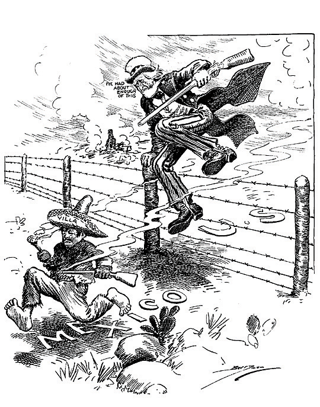A political cartoon showing a diminutive Pancho Villa fleeing an angry Uncle Sam who is crossing into Mexico. In the background is a smoldering fire, a reference to Villa’s attack on Columbus, New Mexico.
Magòn and his followers believed that the Mexican Revolution provided an opportunity to challenge the status quo and spread the revolutionary sentiment of Plan de San Diego. In New Mexico, Mexican and Mexican American vigilante groups launched raids against commercial farms and ranches they believed had stolen land belonging to formerly independent rancheros. They hoped to unite Asians and African Americans and encourage them to join their cause but failed to find much support even among the majority of Mexican Americans in the region. A major reason for the lack of popular support was the violent rhetoric that some revolutionaries espoused. Like Magòn, many of these groups were influenced by the ideas of anarchists. For example, the name of one band of New Mexico vigilantes translates to “The Black Hand”—the name of the Serbian anarchist group that would be blamed for planning the assassination of Austrian Archduke Franz Ferdinand that led to World War I.
The deadly conflicts that erupted in the borderland would also share connections with World War I. The most violent of these occurred in South Texas and near the railroad towns of Columbus, New Mexico, and El Paso, Texas. Several hundred were killed and at least a million dollars of property was destroyed between July 1915 and the end of 1917. The first shots were fired by raiders hoping to seize property and drive white settlers out of the region, but the majority of the killings were committed by the Texas Rangers, various US Army and National Guard units, and armed white vigilantes. Atrocities were committed by both sides, and many peaceful settlers of Mexican descent were killed or jailed in the various roundups that followed each outbreak of violence. About half of the white and Mexican settlers of some farming communities simply fled north or south, while many others who had hoped to avoid the conflict felt their best chance of survival was to join with a particular side or faction. The exodus led to a severe labor shortage and an effort to quarantine “good Mexicans,” a euphemism for a laborer who did not support Magòn and other revolutionaries. By September 1915, reports of executions and lynchings of Mexican and Mexican Americans along the border were so commonplace that they were no longer newsworthy. “It is only when a raid is reported, or an [Anglo] is killed, that the ire of the people is aroused,” a local commentator explained.
By the spring of 1916, Carranza’s government was able to bring most of the raids originating from Mexico to stop. The people of the borderlands remained on guard, however, as supporters of Pancho Villa indicated their desire to retaliate against the United States for its support of Carranza and to capture weapons and supplies. Villa and five hundred of his supporters attacked the town of Columbus, New Mexico, in March 1916. These attacks resulted in the deaths of over a dozen US soldiers and civilians. General John PershingThe commander of American forces in Europe during World War I. Because he had once served as a commander of African American troops, he was given the derisive nickname “Black Jack.” The 10th Cavalry was one of the finest units in the US military, so the nickname demonstrates the pervasiveness of racism in the military and the nation at this time. led thousands of US troops into Mexico to pursue the former US ally Pancho Villa. Although the Carranza administration opposed Villa, it demanded that Pershing withdraw and regarded the US military’s uninvited presence in Mexico as tantamount to invasion.
Tensions between the two countries regarding US military presence in Mexico had already been high after a deadly clash in the Mexican city of Veracruz that occurred on April 21, 1914. A small group of US sailors had been arrested for entering an area that was off-limits to foreigners. Mexican officials released these men to their commanders, who inexplicably demanded that these Mexican officers salute them and the US flag as a symbolic apology for enforcing the law. Under the pretext of an insult to national honor, US troops responded to the imagined slight by occupying the city of Veracruz. Nineteen US servicemen and perhaps as many as 200 Mexican lives were lost in resulting street battles. As a result, many Mexican citizens viewed Pershing’s 12,000 troops with suspicion when they entered Mexico and feared that the tens of thousands of National Guardsmen who were sent to the border might become the vanguard of an invading army. After all, Villa’s attack and the insecurity along the border was at least perceived as a compelling reason to start a war as the pretenses cited by the Polk administration when the United States invaded Mexico in 1846. However, Pershing’s men failed to locate Villa, who retained his popularity as a Robin Hood figure among the residents of Northern Mexico.
The incident revealed the unpreparedness of the US Army and led to extremely high tensions between the United States and Mexico. These two factors also influenced Germany’s later decision to propose an alliance with Mexico. If the United States should later decide to enter World War I on the side of the British and French, German officials pledged to help Mexico recapture various Southwestern states if Mexico would join the war as a German ally. Germany hoped that the United States would be unable to send a sizeable force to Europe if they also had to fight a defensive war along their extended border with Mexico. British intelligence intercepted this communication, known as the Zimmerman TelegramA communication sent by a German ambassador to officials in Mexico, offering an alliance against the United States. Although Mexico never seriously considered aiding the German cause, the Zimmerman Telegram led to increased tensions along the US-Mexican border., on January 1917. Because Germany and the United States were at peace at this time, revelation of this poorly conceived plot helped influence the US decision to enter the war. Although Mexico immediately declined Germany’s offer, the Zimmerman Telegram further inflamed the tensions and fears between Anglos, Mexican Americans, and Mexicans in the Southwest. For the rest of the nation, the failure of the US military to locate Villa played into the arguments of both sides of the growing debate about whether the United States should increase military funding.
The Schlieffen PlanA strategic German offensive based on attacking France through Belgium rather than their shared border. This plan was drafted long before World War I, a fact that has been cited as proof of German bellicosity. However, most of Europe’s leading empires had multiple contingency plans for various offensive and defensive strategies. had been developed in advance by German military commanders and proposed a way to win a quick and limited war in France by attacking through Belgium rather than the well-defended border between Germany and France. After prevailing over France, German commanders planned to transfer these troops to counter the threat posed by the Russian army in east. Following the strategy laid out by the Schlieffen Plan, German troops entered Belgium on August 3, 1914. They initially encountered much stronger resistance than they had expected, and some of the German commanders responded by ordering cities burned to the ground. The resistance delayed the German advance and allowed France to begin redeploying its troops. On the Eastern Front, Russian forces mobilized much faster than anticipated and threatened East Prussia. The German high command placed General Paul von Hindenburg in charge of the defense of Germany’s Eastern Front and shifted some of the troops planned to participate in the invasion of France to the east. At the Battle of Tannenberg in late August, Russian troops were surrounded, and over 70,000 were killed or wounded before the remaining 90,000 surrendered. The Russian defeat temporarily neutralized the threat to Germany in the east, although this success came at the cost of reducing the number of German forces in the west. Due to Belgian resistance and the redeployment of forces, Germany did not secure its hold on Belgium until August 20.
Figure 5.10
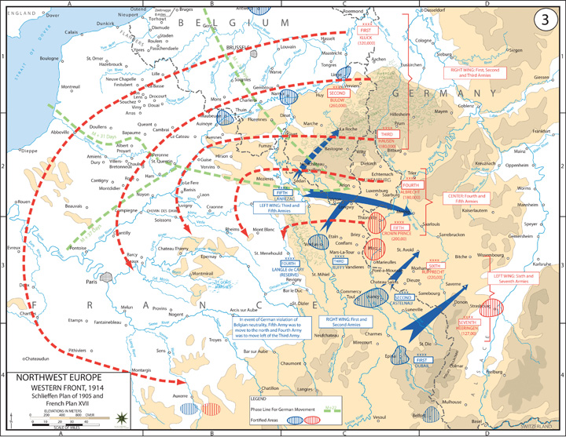This map shows the French and German battle plans. The French hoped to cross into Southern Germany while the German Schlieffen Plan was based on a quick offensive through Belgium and Northern France.
Britain’s relatively small land army rushed to eastern France and joined the French in their defense against the German army. In general, this action was a fighting retreat, and by September 5, the Germans had reached France’s Marne River. By this time, French troops had been transferred from the southern border with Germany and mounted a fierce resistance in the Battle of the MarneA major turning point in World War I, British and French troops stopped the German offensive in a week of heavy fighting in early September 1914. Both sides formed defensive trenches that neither were able to surmount, marking the transition to a war of attrition.. In the next week, a million troops on each side clashed, dug defensive trenches, and attempted to outflank the other’s lines of defense. The French stalled the German offensive at the Battle of the Marne and forced the Germans to fall back behind a line of defensive trenches forty miles east of the Marne River. Behind these trenches, the Germans rallied and were able to halt the British and French counterattack.
Each side attempted to go around the other’s trenches while rapidly constructing its own line of defensive fortifications, complete with artillery and machine-gun nests. In an era before modern tanks and aircraft, neither side could overrun the other’s trenches with infantry and cavalry charges. As a result, whichever side could maneuver around the other’s trenches would hold the upper hand. In what has been dubbed “The Race to the Sea,” both sides sought to maneuver their forces north before the other could counter. The race was a draw, and the Western Front was transformed into nearly five hundred miles of frontline trenches after neither side was able to outflank and get around the trenches the other was constructing. In front of these networks lay a vast no-man’s-land where millions of rounds of ammunition and artillery shells killed every living thing. Behind the trenches was a vast network of miles of secondary trenches. When both sides reached the English Channel, and with nowhere else to maneuver, a deadlock ensued.
The German failure was a result of underestimating Belgium and French resistance, assuming Britain would not send its army to defend France, and underestimating the speed of Russian mobilization. As a result, Germany was forced to fight a war on multiple fronts—the very thing the Schlieffen Plan was designed to prevent. In the next four years, millions died during a series of failed attempts to push the enemy from the relative safety of its disease and vermin-infested trenches. Millions of men lived in these trenches, enduring daily artillery barrages and the constant threat of sniper fire if they ever allowed their head to rise above ground level. Mud and human refuse were constant companions, as were diseases such as trench foot, which could only be cured by amputation.
Figure 5.11
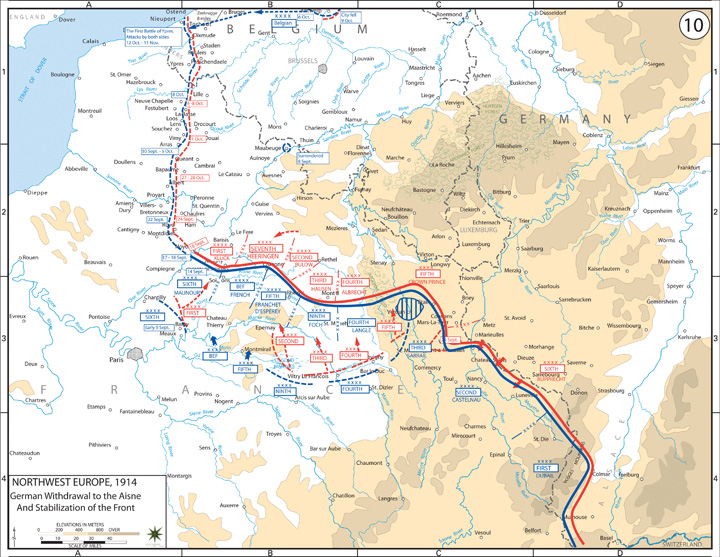This map shows the location of both armies along a long defensive line of trenches after the French stalled the German offensive at the Battle of the Marne in 1914. For the next three years, the bulk of the fighting in the Western Front was along this line of trenches.
Americans were shocked by the daily carnage of this war of attrition as tens of millions of rounds of artillery shells were launched and frequent attempts were made to overcome hundreds of machine-gun crews by massing thousands of men in deadly frontal assaults. At various points, both sides attempted to overwhelm the other by sending a human tidal wave over the top of their trenches and across no-man’s-land. Germany launched just such an offensive in February 1916 in hopes of overwhelming the French fortress city of Verdun. Even though the Germans succeeded in taking Verdun, the French simply constructed more defensive fortifications just past the city, which negated any tactical advantage the Germans might have won. France then responded with its own counterattack against the exhausted Germans, which resulted in the recapture of Verdun. After ten months, over a million men were killed or injured in the battle around Verdun, and neither side had gained any ground. The British launched a similar offensive between July and November 1916. Known as the Battle of the Somme, the British advanced only six miles and lost a million casualties.
The Germans had greater success on the Eastern Front, capturing Warsaw and driving Russian troops back from their previous advance, and inflicting 2 million casualties in 1915 alone. Russia’s immense army absorbed these losses, while launching its own successful offensives against Austria-Hungary. The Russian advance motivated Romania to enter the war on the side of the Allied Powers, even though it had earlier formed an alliance with Germany. Like Romania, Italy had been aligned with Germany, but it declared neutrality at the start of the war and later joined the Allied Powers in hopes of territorial preservation and expansion. Similar to the experience of Romania, Italy enjoyed modest success against the forces of Austria-Hungary but was unable to defeat the German reinforcements that were later sent to Southern Europe. The greatest suffering in the east was borne by the Russians. An estimated 3.6 million soldiers were killed or missing while 2.1 million men languished in German prisoner-of-war camps. In a nation that was already suffering internal turmoil before the war, Russians turned against their government, who they held responsible for the war and the famine that ravaged the countryside.
The Russian RevolutionA popularly supported revolution that overthrew the Tsarist government of Russia in February 1917. After a period of civil war, the Bolshevik Party seized power, installed a Socialist government, and signed an armistice with Germany prior to the end of World War I. began in February, leading to the abdication and eventual execution of the czar. At first, Russians were optimistic that their provisional government would restore stability. However, the Russian army suffered reverses in the field, while vital resources were diverted from the people of Russia to support the war effort. Worker’s councils known as “Soviets” demanded increasing authority over the political affairs of the nation. As the war continued to bring little but suffering to the Russian people, a Socialist Party known as the Bolsheviks emerged as the leading political faction in Russia. The Bolsheviks enjoyed the support of the peasants and workers with their promise to end the war immediately and provide landownership for farmers and collective ownership of factories for urban workers.
Figure 5.12
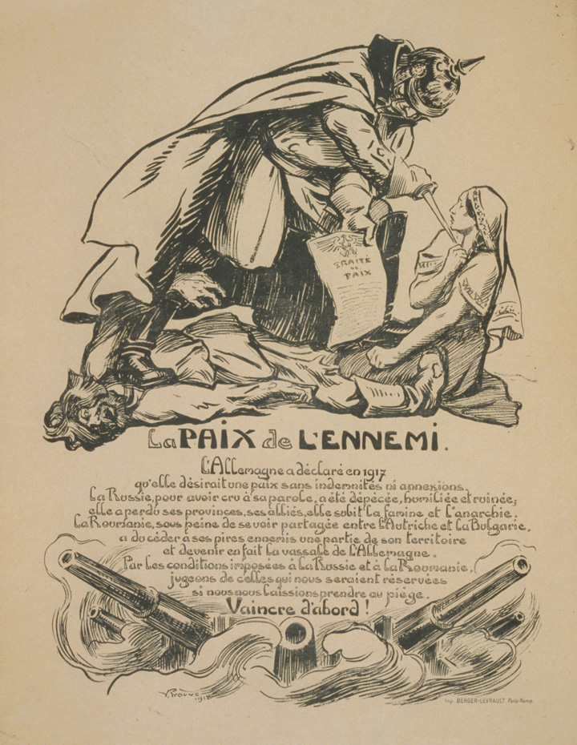In the wake of the Russian Revolution, both Russia and Romania signed an armistice with Germany. Both nations were forced to accept severe terms by the Germans. In this French image, Germany is crushing a man representing Russia and holding a knife to the neck of a woman representing Russia.
The Bolsheviks were led by Vladimir Lenin who seized power in November 1917 and quickly signed an armistice halting the war between Germany and Russia. By March, the cease-fire was permanent with the signing of the Brest-Litovsk Treaty, which declared a formal end to hostilities between Germany and Lenin’s Socialist government in Russia. A civil war between Lenin’s supporters and his opponents waged for the next two years in Russia, but the supporters of Lenin prevailed against those who sought a return to the czarist government. A small contingent of American troops was deployed to aid those who opposed the Bolsheviks. Although militarily insignificant, the US intervention demonstrated the hostility of many Americans toward Socialism and led to strained relations between the two countries.
Along the Western Front, men who were conscripted into the French army began refusing orders they believed were suicidal. Similar refusals to go over the top were encountered among German and British troops who felt no desire to prove their patriotism by advancing against machine guns in battles that sacrificed the lives of tens of thousands of troops to achieve marginal strategic gains. In January 1917, President Wilson had attempted to capitalize on a nascent but growing peace movement in Europe. He hoped to negotiate an agreement whereby each belligerent nation would agree to return to the territorial status quo before the war. The German Reichstag met in July 1917 and discussed Wilson’s idea of “peace without victory.” The Catholic Centre Party and the Socialists declared their willingness to discuss peace under these conditions. Although many leftists and moderates throughout Europe likewise favored the idea and the plan actually secured the support of a majority in the German Reichstag, the leaders of Europe rejected the idea. A similar plan brokered by the pope also failed.
Two main reasons account for the failure of these attempted negotiations. First, the leaders of Europe still hoped and believed that they would ultimately prevail. To accept a return to the status quo in the midst of the war would be tantamount to admitting that the decision to enter the war was a mistake and millions of soldiers had died in vain. Second, hostility and fear about the growing power of Socialist parties throughout Eastern and Western Europe made those in power even more hesitant to end the war. The Socialists had grown largely because of their consistent opposition to the war as a Capitalist plot. Regardless of the validity of such a theory, ending the war without declaring a victor would raise grave questions about the lofty pronouncements that were made to justify the war and even more questions about the present leadership of one’s nation. Fearful that ending the war would fuel the growth of Socialism, even Wilson sought to thwart the efforts of Socialists who were holding peace conferences throughout Europe. Confident in their eventual victory, while privately candid about the limited value of any potential new territory in comparison to what had been sacrificed to obtain it, the leaders of Europe continued the war. Each believed that only victory might justify the lives of the millions who had already perished.
As the war waged in Europe, President Wilson counseled Americans to be “neutral in thought as well as action.” Even as the nation reasserted its neutrality, neither the president nor the majority of Americans really followed the spirit of this advice. A third of the nation’s people were either European immigrants or the sons or daughters of these “new Americans.” Many Americans of German descent identified with their homeland, while those from Central Europe had a variety of loyalties and concerns that also outweighed their president’s decree. Irish Americans nursed a deep and historic distrust of England. French, British, Belgian, and Russian immigrants understandably favored the Allied Powers. Most American leaders in politics and business were of Western European origins and strongly favored Britain. Sentiment, geography, and the effectiveness of the British naval blockade of German ports in the North Sea led most American businesses to trade with Britain and France. Although neutrality implied that the United States would not act in a manner that favored either side, American farmers provided two-thirds of the food consumed by British soldiers and civilians. Although France had once boasted a productive agricultural system, the loss of labor and the destruction of the French countryside east of Paris created a situation where the French were also increasingly dependent on grain provided by American farmers. American forests, mines, and factories also produced finished goods and raw materials that were essential to the war effort of Britain and France.
Figure 5.13
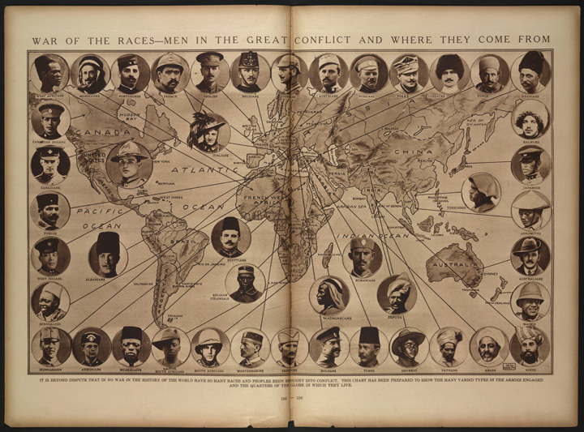This map from the New York Times depicts the war as a contest not only between governments and nations but between various races.
As the war dragged on and the western Allied nations could no longer afford to purchase these vital resources with cash, US banks provided the governments and businesses of Western Europe with billions of dollars of loans and credit. Despite its neutrality, the federal government also provided loans to the Allied Powers. German Americans invested $25 million in German banks, a trifling amount in comparison to the billions that were provided to England and France. However, the existence of aid and investment to all nations provided some substance to American claims of neutrality. Secretary of State William Jennings Bryan feared that the trade and credit imbalance might eventually lead the United States into the war to protect US investments, the bulk of which were tied to the fortunes of Britain and France. As an isolationist, he had spent much of the past decade and a half demonstrating the tendency of American loans and investments in Latin America to lead to military intervention in this region. Bryan eventually resigned his position in protest of America’s drift toward the Allied Powers, an occurrence that was welcomed by those favoring greater American intervention and investment. Because America’s historic, economic, and cultural ties to England and France were far stronger than Germany, American neutrality strongly favored the Allied Powers.
Germany recognized that the Western Allies were dependent on American food and credit. The Germans hoped that they might counter this threat by unleashing their submarines on British and French ships that were transporting American-made food and material across the Atlantic. Germany had only 24 submarines in 1914 but had expanded its fleet to 120 submarines by 1917. The German government declared that the sea-lanes leading to Europe and France were war zones and warned Americans that any ship heading toward these ports would be sunk. Americans protested this German declaration as a violation of the rights of neutral nations and a defilement of the international concept of freedom of the seas. Ironically, a similar declaration by the British navy regarding the North Sea—which provided access to German ports—had aroused little concern among most Americans.
On May 15, 1915, a German U-boat sunk the British freighter LusitaniaA British ocean liner that traveled between England and New York until it was sunk by a German submarine in May 1915. Among the more than 1,200 passengers who lost their lives were 128 American citizens.. Of the 1,200 lives lost, 128 were Americans. Despite the fact that the Lusitania was carrying a billion dollars’ worth of war material, including 4 to 6 million rounds of ammunition, most Americans viewed the sinking of the Lusitania as an act of unprovoked aggression. Germans defended the measure as an act of self-defense and emphasized that they had even published warnings to civilians about the danger of traveling on British vessels—some of which specifically named the Lusitania as a target. However, Germany recognized that the sinking of ships with civilian passengers on board would only unite their opponents and might even lead the United States into the war. As a result, the German navy declared that it would not sink any more civilian vessels without first providing for the safety of those on board.
Despite these assurances, the Lusitania sinking had already inspired Congress to approve a dramatic peacetime expansion of the US military. The National Defense Act of 1916A peacetime measure approved by Congress authorizing troop increases and construction of new ships for the US Navy. Although most members of Congress still opposed US entry into World War I at this time, the law demonstrated that government officials believed it was prudent to increase the nation’s military preparedness in response to world events. doubled the size of the army to 175,000 soldiers and authorized $600 million for new ship construction. These expenditures were financed by an expansion of the income tax system to include modest taxes on the middle class and significant taxes on armaments companies that were profiting from the war. When a French passenger ferry named the Sussex was also sunk on March 14, 1916, Germany again pledged that it would not attack civilian vessels without first providing for the safety of occupants. This renewed promise was strengthened by some specific guidance and became known as the Sussex PledgeA promise made by the German government to limit its use of submarine warfare against civilian vessels following the sinking of the French passenger ship in March of 1916.. Unfortunately for German naval commanders, the Sussex Pledge neutralized the only advantage submarines enjoyed over other vessels—the element of surprise. Germany promised its submarines would rise to the surface and summon other boats to provide space for passengers. Of course, such an action might prove suicidal for German submarine crews if a suspected civilian vessel turned out to be a British or French warship. As a result, the Sussex Pledge led to a sudden decline in the effective deployment of German submarines in the Atlantic.
By early 1917, German leaders believed that the French and British could not continue the war for long if they were denied access to US supplies. They also recognized that their own ability to supply their armies was dwindling and that civilian support for the war was declining. The Germans calculated that even if the United States entered the war, it would take at least a year to raise, train, and equip a substantial army. The Germans had observed the impotence of the US military in protecting its own border from the ragtag forces of Pancho Villa. Its decision to approach Mexican authorities about a potential alliance proved disastrous, but Germany had already declared that all US ships would be sunk without warning by the time the Zimmerman Telegram was intercepted. Germany announced a new policy of unrestricted submarine warfare on February 1, 1917; this policy led to an immediate end to diplomatic relations between the United States and Germany. In the next two weeks, Americans reacted to the sinking of a half dozen US ships in the Atlantic with rage. The release of the terms of the Zimmerman Telegram to the US public on March 1 added to the sense of rage and produced the sentiment that the United States was honor bound to respond with military force. From the perspective of the Germans, US entry was a calculated risk they were willing to take if it might mean the ability to block at least temporarily the supply routes that were keeping Britain and France in the war.
A ship carrying contraband should not rely on passengers to protect her from attack—it would be like putting women and children in front of an army.
—US Secretary of State William Jennings Bryan
Figure 5.14
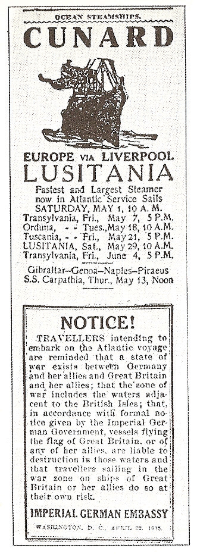A warning issued by the German Embassy advising Americans that a state of war existed and any British ship, such as the Lusitania advertised here, was liable to be sunk by the German Navy. This warning is dated April 22, 1915, and the Lusitania was sunk less than one month later.
However, even as more and more Americans agreed that they could no longer be neutral, most were still reluctant to send an army to Europe. They had watched the war transform into the hellish nightmare of trench warfare and remained thankful that they were divided from Europe by a vast ocean. The decision to remain neutral in the conflict had proven the most popular policy of President Wilson in the last four years. However, in addition to the injured honor produced by the sinking of US ships and the Zimmerman Telegram, strategic concerns induced some Americans to favor US entry on the side of Britain and France. The long-term consequences of their neutrality changed in early 1917 as it appeared that Germany might prevail while Bolsheviks might seize power within Russia. If the United States’ entry into the war could bolster the sagging morale of Britain and France, some in the United States began to argue that such a declaration might be necessary. Others pointed out that a US declaration of war might also bolster those in Russia who opposed Lenin and were in favor of continuing the war and turning back the Socialist revolution.
Declaring war did not necessarily mean full mobilization of a massive land army, these early supporters of intervention pointed out. The army might simply send a support units and weapons. After all, American foodstuffs and manufactured goods appeared more important to winning the war in early 1917 than the small number of available ground troops. A declaration of war would free the US Navy to escort US merchant ships and attack German submarines and other vessels that had been threatening the Atlantic sea-lanes. In short, a declaration of war did not require a draft or even full mobilization of existing forces. It would bolster the morale of the Western Allies and provide the opportunity for greater security for US products and ships across the Atlantic. In consideration of these options, Wilson issued a declaration of war on March 20, and Congress approved the measure by a large margin during a special session. The president issued the declaration on April 6, thereby ending the United States’ official policy of neutrality. Shortly after the declaration, the president and Congress approved dramatic increases in military spending and the construction of dozens of training camps.
Substantial numbers of US troops would not arrive in Europe for another year, but the US declaration of war had an instant and dramatic effect on Allied shipping. The adoption of the convoy system reversed the military success of German U-boats as the US Navy began escorting fleets of cargo ships. By September 1917, the German navy was launching new submarines at a record pace, but these new ships could not make up for the rapid sinking of U-boats by the US Navy. The first divisions of US troops had already arrived in Europe at this time, their safe passage being almost guaranteed by the convoy system. As a result, the calculated risk Germany took in sinking US ships failed in its objective of limiting the shipment of American goods. On June 26, 1917, Allied ships began carrying a different payload that would demonstrate the folly of Germany’s decision. Fifteen thousand US soldiers under the command of General John J. Pershing debarked for Europe on this day, the advance guard of an army that transported 2 million men to Europe the next year-and-a-half. However, the Germans had one more calculated risk they planned on taking—a massive offensive that nearly ended the war before more than a handful of US divisions had even arrived in France.
Representatives of the Western Allies arrived in the United States immediately following the declaration of war. Like many in the United States, these British and French envoys assumed that the primary contribution of their new American allies would be grain, money, raw materials, and manufactured goods. Congress and US banks provided credit on generous terms to ensure that all of these commodities would be in ready supply. However, Congress also authorized the rapid expansion of the army and navy. Britain and France assumed these troops would be integrated into their own command structure. US military leaders, especially General Pershing, opposed such a plan and refused to consider anything other than an independent US command in Europe. Pershing requested that at least a million men be sent to Europe, where they would be assigned to their own sector of the Western Front and placed under his command. At the same time, Pershing recognized that it would take at least a year before anything resembling an American army might be assembled and trained. As a result, he agreed to send a number of units to assist the British and French. The most famous of these units was the 369th Infantry, respectfully known as the “Harlem HellfightersA nickname given by German troops to members of the 369th US Infantry who fought with the French army during World War I. These African American troops suffered high casualties and were all awarded the Croix de Guerre by France for their valor.” by their German opponents. The 369th suffered high casualties and earned the respect of the French, who awarded the entire regiment the Croix de Guerre—one of the highest awards, which is usually reserved for individual acts of heroism. The experience of the 369th contrasted markedly with that of most African Americans who served within the US Army and were placed in labor battalions.
Figure 5.15

This painting by H. Charles McBarron Jr. shows the Harlem Hellfighters of the 369th Infantry Regiment in battle. Because of their valor, France awarded the entire regiment the Croix de Guerre.
Although Wilson and other government officials hoped to maintain the tradition of an all-volunteer army, two main concerns led to the use of the draft. Congress believed that volunteer enlistment would be insufficient to increase the size of army from its present strength. After all, the army had not grown significantly despite the National Defense Act, which permitted the army to enlist over 200,000 men. At the time the United States entered the war, the US Army had only 122,000 enlisted men in the regular army. The 180,000 men in various state-run National Guard units might bolster this number, yet these units were largely independent of the federal army. In addition, some states still had special provisions forbidding the deployment of their guardsmen overseas. The second concern was that volunteer enlistment would be haphazard. The government feared that men with vital industrial skills would voluntarily join the military when they would actually be more useful on the home front. Part of this sentiment was related to the continued belief that the United States’ most vital contribution would continue to be money and material, along with the mobilization of the navy to guard these shipments on its perilous journey across the Atlantic. American and foreign leaders recognized that modern warfare required the full mobilization of industry, and US allies needed food and equipment more than they needed soldiers—at least in the spring of 1917.
Congress in May created the Selective Service SystemA system created by the US government requiring mandatory registration for possible conscription into the armed forces for all young men between the ages of twenty-one and thirty. In the present day, all male citizens between the ages of eighteen and twenty-five are required to register., which required that all men between the ages of twenty-one and thirty register for the draft. Civilians operated local draft boards that helped to limit organized opposition to the draft. However, local control also led to haphazard enforcement and arbitrary interpretations of service disqualifications and deferments. Draft boards were instructed to rank registrants within categories such as health, wartime value of their civilian occupation, and home responsibilities. A young man without a job in perfect health could expect to be inducted if he was drafted, but a father who was a skilled wielder would likely be granted an exemption. Draft boards operated by white Southerners often granted every possible exemption to black draftees due to concerns that military service would lead to racial equality. Other boards operated by white Southerners took the opposite perspective, granting exemptions for white draftees while ignoring compelling evidence that should have led to exemptions for black men with important jobs and families to support.
Figure 5.16
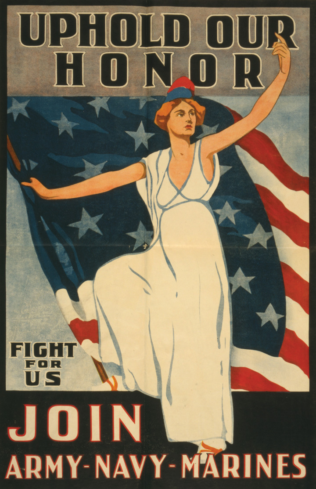Many World War I recruiting posters contained gendered messages such as this one. Here, the female embodiment of Liberty asks the men of America to fight on her behalf and defend her honor. The phrase “fight for us” also implies that men are being called on to protect womankind.
Those who opposed the war for moral or religious reasons were likewise vulnerable to the decisions of local draft boards, which became notorious for their arbitrary rulings. Most draftees who could document their long-standing membership in a particular religious order that the federal government recognized as pacifistic were granted exemption from military service. Those who were not members of organized churches were left to the mercy and judgment of the boards that rarely had the time or inclination to really investigate individual cases. Once a local board recognized a man as a conscientious objector, he was to be given an alternative assignment. The military moved slowly in providing these assignments, and the majority of registered objectors spent many months in military camps awaiting orders. That 16,000 of the first 20,000 men registered as conscientious objectors decided to relinquish their combat exclusion while in these camps is indicative of the “persuasive” methods that were used to convince these men to take up arms.
Figure 5.17

This cartoon depicting conscientious objectors as effete demonstrates some of the prejudices that men who refused to take up arms for moral or religious reasons faced.
By the end of the war in November 1918, nearly 4 million soldiers had joined the US Army and Navy—about 60 percent of whom were draftees. Eastern port cities swarmed with soldiers, most of who were from rural backgrounds and had rarely been to a large city. The wartime boom was also a tremendous boon to the vice districts of these cities until government regulations and military police created effective methods of quarantining the men. The emphasis on purity was related to the view that many US leaders shared that the war was a moral crusade. Other prominent Americans, such as the aging Theodore Roosevelt, saw war as the ultimate test of manhood. Like most generations before them, American boys spent their youth playing with toy soldiers and listening to the stories of heroism passed down from the veterans of the Civil War. History and memory are often distant cousins and, in most cases, those who claimed to speak on behalf of the wartime generation had never suffered in a Confederate prisoner-of-war camp or endured the brutality of the Wilderness Campaign. Popular journals refused to print stories submitted by amputees and prisoners, leading to a fictionalized account of war as some kind of benign escapade that marked the journey from boyhood to manhood.
Like those who had actually seen years of campaigning in the Civil War and those who were part of the occupying force in the Philippines during the Spanish-American War, the first American volunteers would learn that courage and endurance were often two separate choices rather than character traits. Machine guns and trench-borne diseases made few distinctions based on chivalry and honor. For these survivors, Armistice Day orators who spoke of the “magnificent orchestra of war” must have been far away from the front. Those who knew war chose to remain silent about their time spent living among death. That memory of the Great War was far different in the States than in Europe was directly related to the simple fact that the vast majority of the 4 million Americans who joined the military saw no combat action before the war ended in November 1918. The most thoughtful among them agreed with those who saw the war as a tragedy, even if their own military experience contained moments of adventure.
Britain had adopted the slogan “Business as Usual” and opposed the methods of government control over the civilian population and the economy that would become commonplace in other belligerent nations. However, by the time of US entry into the war, even Britain had engaged in unprecedented economic controls and resorted to the draft. US governmental policies were often based on the British model. England belatedly recognized that the war would require full mobilization of all the productive capabilities of their empire. Until that time and especially throughout Europe’s nineteenth century, wars were localized and quick, decided by a few pitched battles. However, during World War I, entire societies were enlisted and transformed in the name of victory. Rationing, price controls, the dizzying pace of factory work, and widespread shortages required civilian populations to sacrifice in ways that paralleled the service of those on the battlefield.
The US government recognized that the war effort depended on the development of a united home front to supply and equip its armed forces. To realize this goal, the Wilson administration assumed a greater level of control over the production and distribution of food, fuel, and machinery. The federal government also assumed an active role in controlling the economy by setting prices, standardizing production, and rationing goods. The level of tolerable political dissent was also reduced and millions of young men were conscripted into military service. To win support for these extreme measures and to ensure political support, the government launched a nationwide program aimed at “selling the war.” Every sector of the US population, including women and children, were both actively engaged and targeted in these campaigns.
In April 1917, Wilson appointed George Creel to head the Committee on Public Information (CPI)A federal agency created to manage information related to America’s participation in World War I and influence public opinion in favor of the war. Due to constitutionally guaranteed freedoms of expression, many of the CPI’s attempts to influence the media became controversial.. This agency was charged with promoting the war effort in ways that presented the sacrifices of Americans on the home front and the battlefield as something bigger than preventing German expansion or protecting US interests. The CPI presented the war as part of a moral struggle for freedom over tyranny. The CPI printed over 50 million posters, pamphlets, films, and other propaganda materials connecting America’s war effort to lofty ideals, while others focused on German aggression in invading France and Belgium. Creel was a former newspaperman and was very reluctant to use the power of the government to censor the press. Although the CPI did censor and even forcibly terminate a number of left-leaning and antiwar newspapers, Creel’s agency generally focused more on mobilizing public opinion than censorship. In this way, the US home front was unique from most of the belligerent nations where the government took control of the media.
Figure 5.18
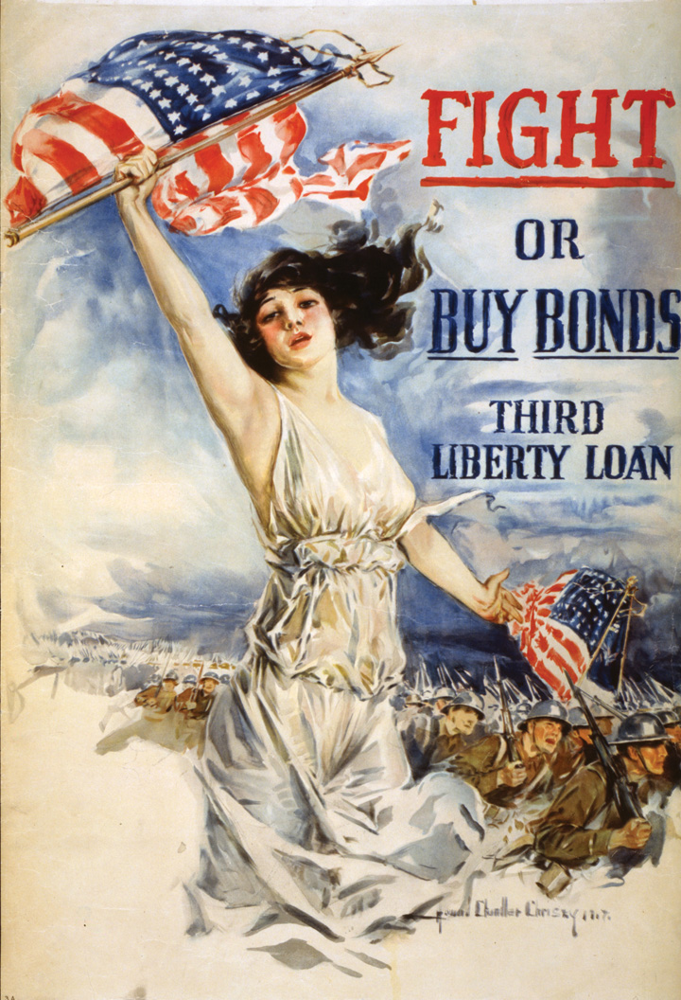One of the many posters printed by the federal government depicting World War I as a moral struggle and urging Americans to purchase war bonds to back their fighting men and the front. These bonds paid interest and were used to finance a large percentage of the war effort.
One of Creel’s most successful programs was the creation of a virtual army of Four Minute Men who gave brief prowar speeches at all public gatherings. Whether attending a baseball game, a concert, or a movie, the performance would not begin until the audience sang a patriotic tune, recited the pledge of allegiance, and listened to one of Creel’s volunteer orators. The CPI also preached a message of “100 percent Americanism,” which called on Americans to back the war effort but could also have more sinister racial and ethnic overtones. African Americans, Jews, Germans, and other racial, ethnic, and religious groups were often challenged by the dominant Anglo Protestant majority to prove their patriotism. Because the default image of a 100 percent American was a white Protestant, all others were considered suspect unless they could prove they were furthering the war effort in some significant fashion. Anti-German sentiments that had been largely discarded since the nineteenth century were suddenly revived in ways that encouraged a degree of vigilantism against some German Americans. Public schools canceled their German-language programs and fired teachers who were suspected of harboring affection for Germany. Concert halls banned music by German composers and hamburgers and German measles became “liberty sandwiches” and “liberty measles.” Perhaps most tragic, being seen with a German Shepherd or dachshund became unfashionable, and some of these dogs were abandoned by their owners in an ironic attempt to prove their loyalty.
Wilson’s idealism about the war was both related his desire to sell the war effort as well as a reflection of his own idealism. He declared that the United States desired “no material compensation for the sacrifices” his nation would endure. The president promised that the United States would not accept any territorial acquisitions resulting from the war. This did not mean that the United States did not expect greater recognition from the international community. Wilson hoped that US participation in the war would permit him to play a leading role in negotiating the eventual Allied victory and framing the postwar international order. He and other Americans also recognized that the war was creating new opportunities for US businesses. Industries that had once been dominated by European firms were suddenly open to US production. American companies that already enjoyed international positions in steel production, shipbuilding, and automobiles manufacturing were reaping tremendous profits during the war due to foreign and domestic demand. These companies would enjoy even more lucrative contracts as the federal government dramatically increased its orders for raw materials and finished products.
Wilson appointed Bernard Baruch to lead the War Industries Board (WIB)A federal agency placed in charge of procuring essential wartime materiel for the government during World War I. Because of the enormity of the task, the WIB ended up managing many aspects of the American economy during the war., which was created in July 1917. Baruch was charged with coordinating the efforts of private enterprise to maximize efficiency and production of products and raw materials the military needed. The WIB was empowered to seize factories, mines, and other private enterprises if the government felt that they were not being used efficiently. For example, in July 1918, workers at the Smith and Wesson gun factory in Springfield, Massachusetts, declared a strike. Chief among their complaints was the mandatory requirement that newly hired workers sign a statement promising that they would never join a labor union. These agreements became known as “yellow-dog” contracts for reasons that are still not fully understood. Rifles were crucial to the war effort, and the federal government ordered the factory to rehire the discharged workers and end its practice of requiring workers to sign antiunion contracts. When the company refused, the WIB seized the entire plant. In a similar strike involving workers at the Remington gun factory in Bridgeport, Connecticut, the government sided with management by threatening to draft all workers who did not return to work. In both instances, the government used coercive power to ensure sustained production of vital war material.
As indicated by the Smith and Wesson and Bridgeport strikes, the WIB regarded labor stoppages within vital industries as potentially treasonous and responded by either seizing the plants or issuing “work or fight” orders for workers. Had these seizures or threats occurred in larger numbers or over several years, many Americans would have likely protested these actions as contrary to the nation’s tradition of limited governmental, freedom of contract, and protection of private property. However, Baruch used his coercive powers sparingly. Instead, he compelled corporations to produce the things the military needed by offering higher-than-market prices. To ensure the full and rapid participation of US industry, the WIB even approved contracts guaranteeing profit by paying expenses related to creating new factories or converting existing facilities from civilian to military production. Finally, the WIB worked with labor unions and often supported workers’ claims for higher wages. The result was an estimated 100 percent increase in corporate profits and a 20 percent increase in the average income of workers during the war.
Figure 5.19
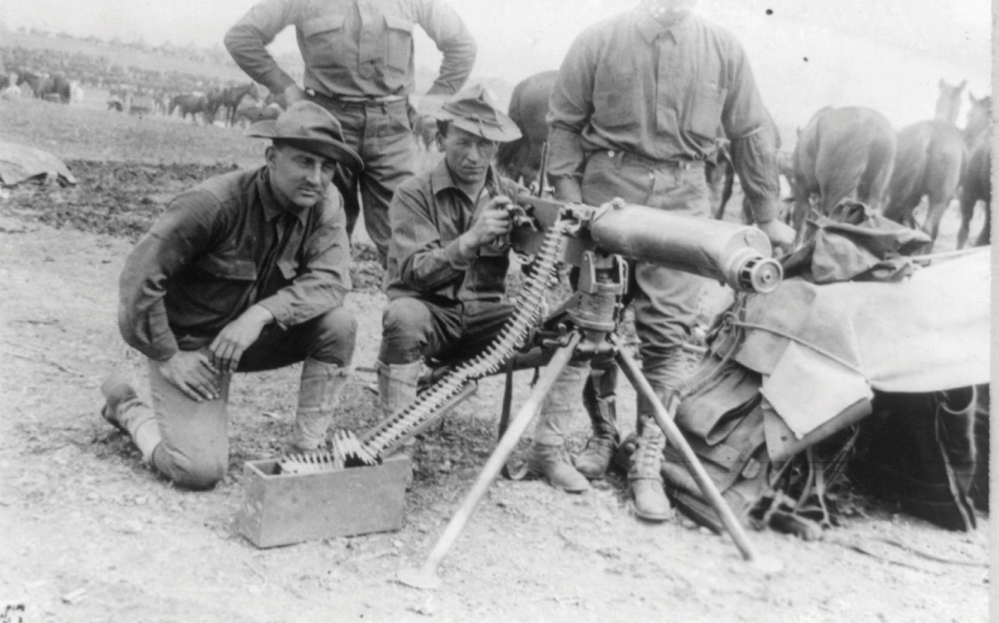This crew of four men armed with a Maxim gun could wipe out an entire regiment in seconds. Early machine guns required a crew to feed ammunition and circulate water through the weapon to prevent it from overheating.
Figure 5.20
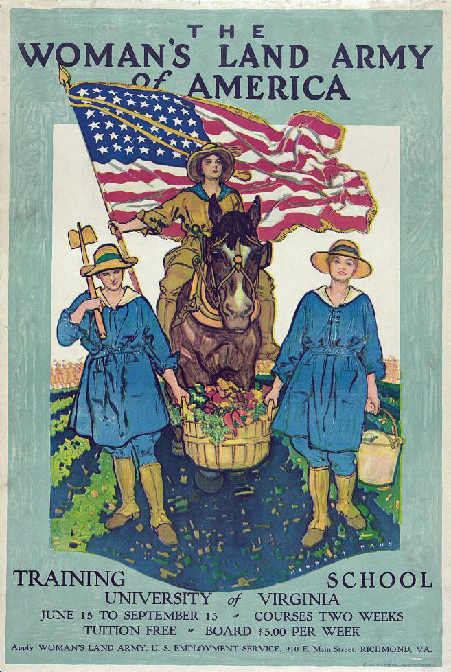The Women’s Land Army of America borrowed from a British idea and trained women for careers in agriculture. Similar courses to those advertised by this poster at the University of Virginia were offered throughout the nation and were intended to help offset the loss of productivity caused by farmers and agricultural workers who joined the army.
As indicated by the swift reaction of the WIB, weapons were among the most important items the government ordered as its military sought to equip nearly 4 million recruits. At the time of America’s declaration of war, the federal government owned 600,000 service rifles. US gun manufacturers were convinced to reduce production of rifles for other nations, and the firms of Remington and Winchester were contracted to come up with a design that would replace the 1903 Springfield rifle. Based largely on the British Enfield rifle, the new US service rifle contained a five-round magazine and fired a .30-06 round. Owing to the postwar surplus, veterans were permitted to keep their rifles leading to the widespread adoption of .30-06 cartridge among hunters and sportsmen. Although Americans copied the British design, an American named Hiram Maxim developed the first truly automatic weapon that used its own recoil to load, fire, and extract used cartridges. Many military leaders throughout the world derided the wastefulness of these “machine guns.” The defensive nature of the war led to a rapid reconsideration of the usefulness of these weapons, and the machine gun quickly became the dominant weapon of the trenches. The use of automatic weapons also led to a belated reconsideration by military commanders about the wisdom of offensive charges against even the smallest foe if that enemy was well entrenched and armed with automatic weapons. At the beginning of the war, most of France’s 2,500 machine guns were left in storage. At the end of the war, France alone had acquired over 300,000 machine guns.
The most important military innovation may have been the development of extremely accurate and rapid-firing artillery pieces. Artillery accounted for the majority of combat deaths and major battles such as Verdun saw over 20 million artillery shells being fired. By the end of the war, the tank had made its combat debut and proved its usefulness both as a mobile artillery unit and as a moving shield for advancing infantry. However, only a few hundred tanks were ever put into operation and none of the fifteen tanks that were produced in the United States and transported to Europe ever saw action. Trucks, tanks, and airpower would prove decisive in World War II. However, these innovations were never available in significant numbers or were not yet utilized in a manner that created a significant tactical advantage during World War I.
Figure 5.21
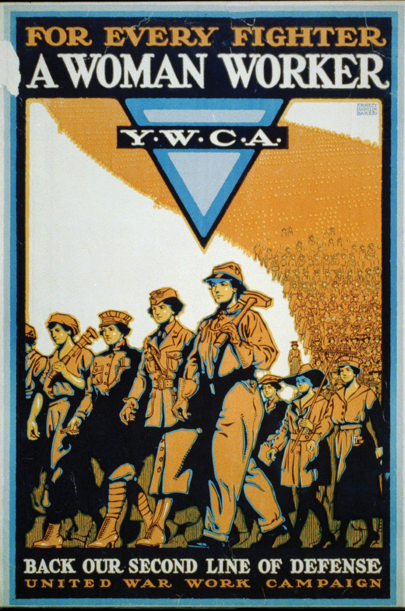Overall, female employment did not increase as dramatically during World War I as it would in World War II. However, as this poster indicates, women entered a number of jobs that had been almost completely restricted to men, which challenged ideas about gender.
Approximately 1 million American women entered jobs that had previously been closed to them owing to their gender. However, overall female employment increased only 6 percent during the war and the vast majority of working women in America continued to work in a small number of professions that were considered appropriate for women. The same was not true of America’s European allies, where greater wartime demand and higher percentages of men in uniform led to unprecedented burdens and opportunities for women. In Germany, two out of every five munitions workers were female, while more than 5 million women were engaged in industrial labor in Great Britain.
Figure 5.22
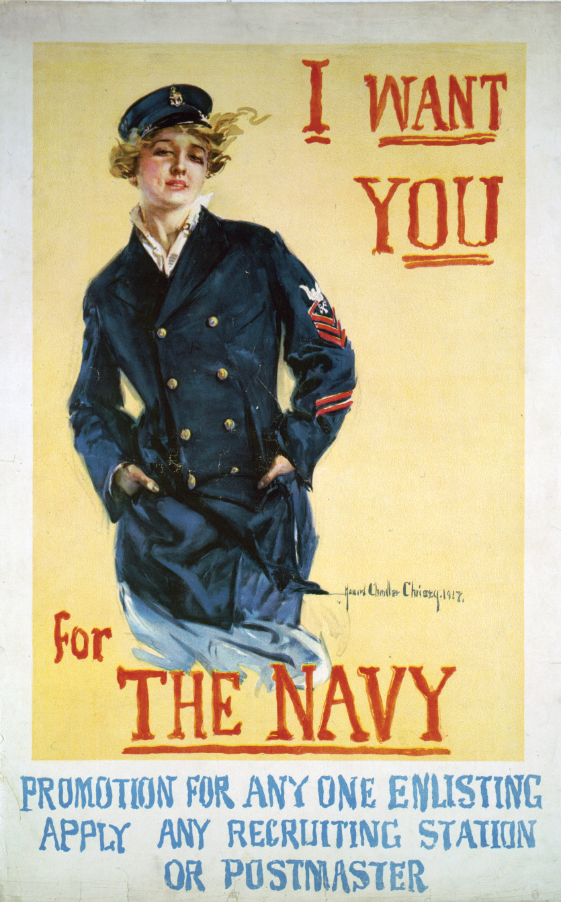A US Navy recruiting poster for women. In addition to those employed by the military as civilians, approximately 12,000 women enlisted in the navy during World War I.
Although it paled in comparison to the shifting patterns of employment in Europe, the war reconfigured the nature of employment for many American women who were already in the workforce. Approximately 1 million women entered professions that were generally reserved for men between 1917 and 1919. Women understood that they were needed in the industrial workforce, and they raised their expectations and demands accordingly. American women also had greater opportunities to organize formally under the banner of a union. In addition, the demand for labor allowed women to form networks and use information to regarding pay and benefits to their advantage. For example, when black women found that they were being paid less than their white counterparts many protested the differential and often succeeded in securing equal pay.
Although the international conflict created an unprecedented number of employment opportunities for women of all races, these opportunities were still greatly limited, and wages for women were often significantly less than that of their male counterparts. Far from replacing the hierarchical relation of labor organized by categories of race and gender, these new opportunities were still generally limited to the most menial tasks and the lowest wages. Perhaps the most significant impact of the temporary increase in the number of women who labored outside of the home was the sudden demand on the state to provide services for children some working mothers could no longer provide. These new demands that were placed on the wartime government raised issues such as child welfare and public education to areas of national concern.
A small number of women served the military in every US conflict, but World War I saw the first official recognition of women as service members. The Naval Reserve Act of 1916 did not specify gender, which led to the enlistment of nearly 12,000 women in the US Navy and Marines. These women were given the unique rank of Yeoman (F). The grade and classification were a combination of the lowest enlisted rank in the navy and an indication of gender, which connoted the expectation that an individual would be assigned to perform clerical work. While women had been employed by the military to perform these kinds of jobs in the past, they had never been permitted to join the military. Female enlistment went against tradition, which led to immediate demands to halt the practice. However, these yeomen (or “yeomanettes” as they were often called) were granted military pay and benefits. They were also considered veterans when the war was over. Several hundred of these women died while in the service, mostly of diseases that spread rapidly aboard ships and military bases.
Most women that served in military capacities were simply hired as contract laborers. Among the most famous female military laborers were the hundreds of “Hello Girls” who worked on behalf of, but not as members of, the Signal Corps. Although they traveled overseas and were subject to military discipline, these multilingual telephone switchboard operators were not given the same pay and benefits of soldiers and sailors who performed similar linguistic and clerical labor. More than 1,500 female nurses served overseas within the navy, and 10,000 women served as nurses on army bases in Europe. Several hundred of these women did not return home, victims of the dangerous nature of their work among infectious patients. Because they were not official members of the military, these nurses were not eligible for military benefits or given the honor of a military funeral. Even larger numbers of women served in various capacities on US bases, and these women were also ineligible for military rank or pay because of their gender.
Figure 5.23 Montana Congresswoman Jeannette Rankin
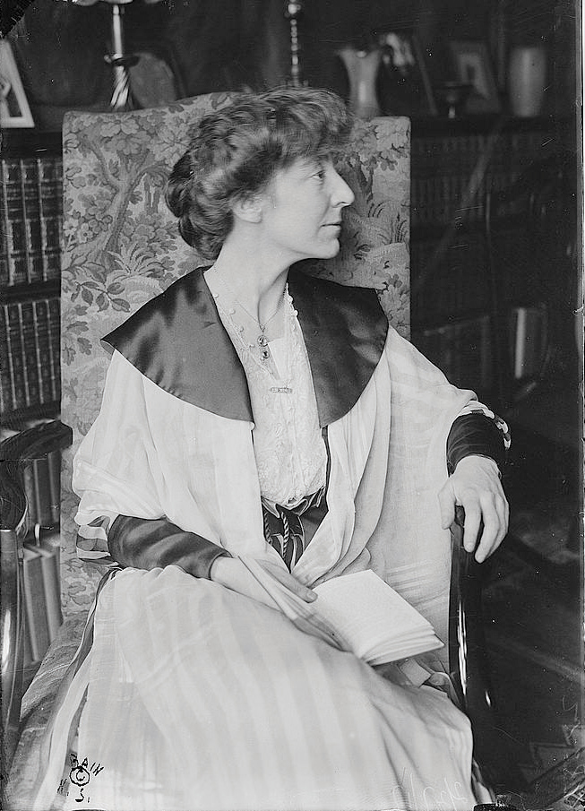As indicated by their service as workers in both civilian and military capacities, most women, as well as advocates of women’s suffrage, followed the general trend of public opinion and rallied behind the war effort. However, some women within the women’s suffrage movement were divided regarding their nation’s decision to enter the war in the spring of 1917. For example, Jane Addams was outspoken as a pacifist and continued to oppose US entry into the war despite being severely chastised for her position. In 1931, Jane Addams’s efforts were finally rewarded with the Nobel Peace Prize, but she was often vilified in her own time. In 1915, Addams was among the founders of Woman’s Peace Party. She was also a leader in the April 1915 International Congress of Women, which approved resolutions calling for an immediate armistice. Despite some violent threats, she continued to travel and lead efforts to provide supplies for refugees.
Montana congresswoman Jeannette RankinA field worker of the National American Women’s suffrage Association who helped to achieve victories for women’s suffrage in North Dakota and Montana, Rankin later became the first female member in Congress. She was also a devoted pacifist and opposed US entry into World War I. used her status as the first woman in Congress to do more than protest the war—she voted against it in 1917. “You can no more win a war than you can win an earthquake,” Rankin famously remarked. Rankin, along with forty-nine of her male colleagues in the House of Representatives, voted against US entry into the war. By the end of the year and owing largely to political pressure, most of her colleagues had reversed course. Rankin held firm to her pacifist convictions, even though it cost her any chance at reelection.
Optimism grew stronger among German military leaders during the spring of 1918 than at any point in the preceding three years of trench warfare. Largely due to German assistance, Austria-Hungary had stabilized the war in Southern Europe while the Russian Revolution had ended the war in the east. The United States was mobilizing for war, but nothing resembling an independent US Army would arrive in Europe until the summer of 1918. In fact, only three US divisions were in Europe in October 1917, and only two more divisions would arrive in the next five months. US training camps were not at full capacity until early spring; a quarter million troops arrived each month throughout the summer and fall of 1918. Germany had anticipated that the United States would eventually shift the balance of power to the Allies. As a result, Germany directed its efforts to ending the war before these men could see action. It nearly succeeded.
Figure 5.24
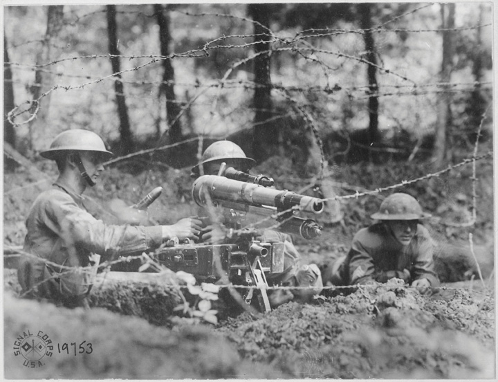American troops firing a French-made mobile artillery piece in Germany. US troops and military supplies shifted the balance of the war, although most artillery pieces and shells were not manufactured in America. Large and small artillery pieces such as this gun were incredibly accurate and had a range of over a mile. For these reasons, artillery was the leading killer of men in World War I.
Pershing had hoped that his new recruits would be given at least a year of training before seeing action. However, the transfer of German troops to the Western Front following the Brest-Litovsk Treaty and the devastating German offensive led to the abbreviation of his idealized training schedule. Between March and July 1918, Germany concentrated its forces in a coordinated offensive along the Western Front. The German army advanced forty miles west and nearly succeeded in capturing Paris. However, Pershing deployed 70,000 newly arrived US troops that helped stem the German advance in the battles of Cantigny in May 1918. US troops also contributed to the battles of Chateau-Thierry and Belleau Wood the following month. By July, the familiar challenge of maintaining supply lines against an enemy counteroffensive doomed the German attack. The Germans then began a fighting retreat back to positions that were nearer to their original trenches and supply lines and awaited the American onslaught. By this time, the United States had twenty-five divisions in France, and the Allied Powers seized the initiative.
Despite nearly three years of trench warfare, the notion that a well-supplied and entrenched machine-gun crew could negate the courage and skill of hundreds of soldiers remained unfathomable to Pershing. The US commander thought he might enjoy greater success than his British and French counterparts. US troops would pay dearly for their general’s overly optimistic assessment of their capabilities in the Meuse-Argonne OffensiveA combined offensive by the Allied Powers during the final months of World War I. The Meuse-Argonne Offensive featured the most significant battlefield contribution by American troops and led to the German surrender in November 1918.. US troops advanced only ten miles in forty-seven days, failing to reach their objective while suffering thousands of needless casualties. Even when the valor of US troops overcame the terrain and entrenched positions of the enemy, faulty supply and communications converted triumph into tragedy. For example, the infamous “Lost Battalion” advanced far into enemy territory within the Argonne Forest and suffered 70 percent casualty rate until it was eventually rescued by slower units.
Fortunately for the green American troops, they would not face the same fate as the millions of German, French, and British troops who were ordered to advance against machine-gun fire. The Germans had already initiated a strategic withdrawal behind what their leaders hoped would be an impenetrable line of defense. Because this line was further east than the Argonne forest objective in the Meuse-Argonne offensive, US casualties were only a fraction of what had been sacrificed by the British in the Battle of the Somme. However, Pershing had correctly determined that the stalemate of 1917 had been ended. By November, the United States had forty-two divisions in France, and together with the more experienced British and French veterans, the Allies had pushed the center of Germany’s line fifty miles east. Recognizing that continuing the war would only result in more killing, Germany’s military leaders requested an armistice, which was signed on November 11, 1918. The German army was near its breaking point, and civilian leaders feared that Germany would face a revolution similar to what Russia had just experienced if the war continued much longer. However, the German army was still on French and Belgian soil when the armistice was signed, and many German civilians had been led to believe that the offensive of the spring and summer of 1918 had succeeded. As a result, many Germans would later search for alternative interpretations to explain their defeat.
America’s demobilization occurred so rapidly that many soldiers spent less time overseas than they had spent training and awaiting assignment in Europe. The nation practically “beat plowshares into swords” in 1917 and 1918 with the sudden conversion to a wartime economy. After the armistice, the nation returned to civilian production in an even shorter amount of time. Days after the war ended, the federal government canceled $4 billion worth of contracts for weapons and other military items. Although the government offered various payments to ensure that US companies did not lose money for these broken contracts, the sudden end of the war resulted in high levels of turnover within wartime industries. These jobs were lost just as soldiers were returning from Europe and seeking employment. Pent-up consumer demand led to the creation of new jobs creating consumer goods and within the construction industry. However, the war had also created high inflation, which reduced the buying power of consumers. Organized labor had often secured contracts that alleviated these forces during the war, but most of these modest wage gains were eliminated once workers were no longer in high demand.
Figure 5.25
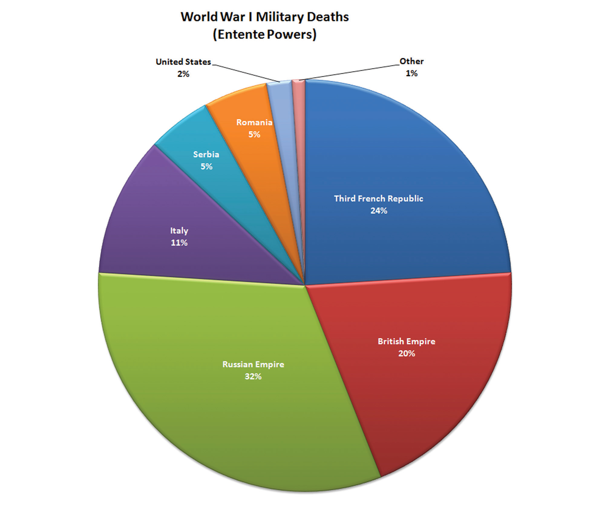As this chart indicates, the 116,000 Americans who lost their lives in World War I were but a fraction of the total number of combat deaths suffered by the Allied Powers. In addition to the other costs of battle, many Europeans felt that Americans such as Woodrow Wilson were in no position to dictate the terms of the postwar settlement for this reason.
One of the most significant effects of the rapid demobilization was the removal of women from industrial jobs and other positions that had previously been regarded as male occupations. Women’s employment in these fields had not occurred in large enough numbers or with the duration needed to fully challenge traditional views about the nature of gender and labor. The shift from home labor to factory labor meant that the small number of young women who found jobs in industry might enjoy larger amounts of discretionary income. However, many male and female reformers worried about the effect of physical labor on women’s bodies. Some even predicted that wearing trousers might disrupt gender relations and may even cause damage to reproductive organs. More common were concerns that the proliferation of female labor jeopardized the male position of breadwinner and would place downward pressure on the higher wages male labor had commanded in the past. If the war created job opportunities for some women, peace had the opposite effect. The brief experience of these women in industry and the continuing importance of women as clerks, telephone operators, secretaries, teachers, nurses, and other professional positions did lead to some changes for women. Combined with their growing political power as voters, women convinced the federal government to create a permanent Women’s Bureau in the Department of Labor.
The war officially ended when Germany signed the Treaty of VersaillesWas signed between Germany and the remaining Allied Powers on June 28, 1919. In addition to officially ending World War I, the Treaty of Versailles required Germany to admit guilt for starting the war and pay reparations to compensate many of the nations it fought against., although the US Senate rejected its provisions. President Wilson had high hopes that he could shape the treaty in a manner that would reduce the conditions that had led to the war. A year before the war ended, Wilson proposed a blueprint for a peace based on fourteen principles. The first five of Wilsons’ Fourteen PointsBased on a speech given by President Woodrow Wilson to Congress, the Fourteen Points were various provisions intended to prevent wars in the future by promoting free trade, diplomacy, national self-determination, and disarmament. attempted to promote free trade, encourage arms reduction, and reduce the number of overseas colonies. The next eight provisions dealt with self-determination for Southern and Central Europe—areas that had previously been claimed various empires but that might be used to create a patchwork of independent nations. Wilson’s fourteenth point was the linchpin of the entire plan, or at least its goal to “end all wars” in the future. It sought to create a “concert of nations” by creating an international organization that would mediate disputes between nations and prevent aggressor nations from attacking others.
Republicans and a number of conservative Democrats feared that the United States would surrender its sovereignty if they joined Wilson’s proposed League of NationsAn international organization formed after World War I to promote global security and prevent future wars through collective actions of its member nations. The United States never joined the League of Nations, which was largely ineffective in preventing conflicts between nations in the years leading up the Second World War.. In addition, Wilson failed to include or even seek the advice of leading senators regarding the peace process that was discussed at Versailles—a critical error that left him open to charges of acting unilaterally. Many of Wilson’s ideas were incorporated into the final version of the Treaty of Versailles; one example is the creation of nine new nations in Eastern Europe. Liberals hoped that these new nations would reduce ethnic conflicts and promote democracy, while conservatives in Europe and the United States hoped that these states would serve as a buffer and insulate Western Europe from Communism.
In exchange for accepting many of Wilson’s ideas and creating the League of Nations, representatives of the Allied Powers demanded and received harsh territorial and financial concessions from Germany. One of the most significant of these concessions was the agreement to pay $33 billion in reparations to the Allied Powers to compensate for their losses in the war. Germany was also forced to agree it had started the war and was alone in the blame for the war’s consequences. Germany was forced to surrender the territories of Alsace-Lorraine to France, abandon its colonies, and reduce the size of its army; it was prohibited to develop offensive weapons, such as submarines or military aircraft in the future. The result of these penalties crippled the new German state. It also angered many Germans, and this anger facilitated the rise of Adolf Hitler during the 1930s. In addition, the United States never joined the League of Nations due to its rejection of the Treaty of Versailles and a return to isolationism.
Figure 5.26
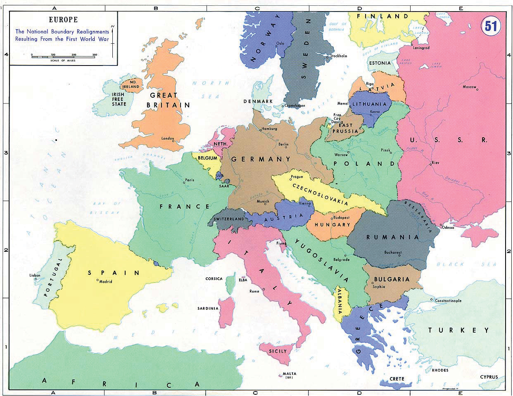A map of Europe showing the national boundary realignment following World War I and the Treaty of Versailles.
In addition to the Treaty of Versailles, policies affecting the future of the Middle East were determined in the aftermath of World War I. England had issued the Balfour DeclarationA communication by British Foreign Secretary Arthur Balfour during World War I that expressed his belief that the British government should support the creation of a Jewish state in Palestine. during the war. Named after the foreign secretary who framed the document, the Balfour Declaration expressed the support of the British government toward the creation of a Jewish homeland in Palestine. After the war, Britain was assigned the responsibility to administer Palestine, and Jewish residents throughout Palestine and throughout the world called on Britain to make good on these sentiments. However, the British had received Arab support in World War I and recognized that the Arab majority in the Middle East would strongly oppose anything that might lead to a Jewish state. The British were especially concerned about the stability of the oil-rich countries of the Middle East. As a result, the British had also declared during the war that they would support Arab nationalism and ensure that the rights of all peoples in the Middle East would be protected. Because the British had invested millions in oil exploration, they wanted assurance that any actions would not jeopardize their standing with local Arab leaders.
Statements of support for Arab control of Palestine and the Balfour Declaration contradicted with one another and were easy to make when Britain had no control of the region. However, at the conclusion of World War I, the Allies dissolved the Ottoman Empire, and the French took control of Syria and Lebanon. Other Middle Eastern states such as Iraq were placed under the control of the British who were also appointed as the administrators of Palestine. In each of these “mandates,” the British and French were responsible for supervising the transition from part of the Ottoman Empire to full independence. This proved especially difficult, as British leaders had promised Palestinian leaders that they would provide aid for the creation of a sovereign Arab nation. Complicating the matter was that Jews and Arabs, along with the small number of Christians in the area, all considered Palestine as sacred land. Nationalist forces in each of these areas felt betrayed as they had supported the British and French in World War I. Jews throughout the British Empire shared similar feelings as Britain failed to act on the Balfour Declaration. Instead, Britain sought to administer in these areas in ways that secured access to oil. The British sought to prevent conflict rather than resolve what many believed was an irreconcilable struggle between Jews and Arabs over the future of Palestine.
Figure 5.27
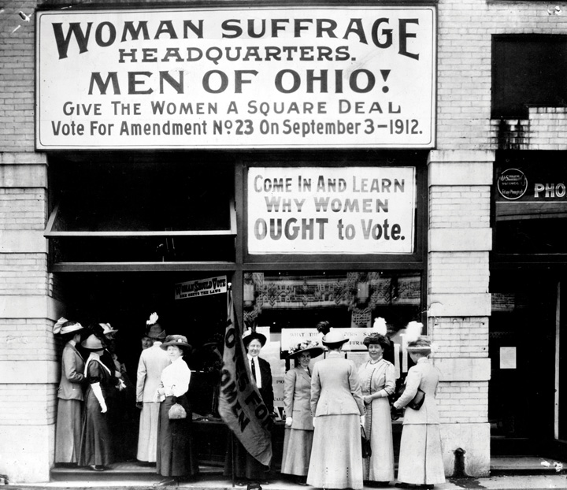The strength of the movement continued to be local organizations such as this one in Cleveland, Ohio. Male politicians came to understand that continued opposition to female suffrage would likely cost them their jobs as more states revised their voting laws in response to grassroots campaigns organized by women such as these.
Even in communities where black and white women worked together to promote suffrage, most black women formed their own organizations and the rank-and-file membership of these groups lived separate lives. White National American Woman Suffrage Association (NAWSA) members were often more liberal regarding the color line, yet they also hoped to attract a larger following in the South and often catered to the racial prejudices of some of their members. For example, 5,000 suffragists from across the country met in Washington, DC, under the auspices of the NAWSA in 1913. The white leadership declared that representatives of black women’s organizations should march in their own separate columns behind the whites.
Ida Wells had been a member of NAWSA for many years, and although she had formed an organization for black suffragists in Chicago, her presence in Washington, DC, was as part of the integrated Illinois chapter of NAWSA. As a result, the decision that Wells must march in the back of the column angered her and several other Illinois women who vowed to march alone with Wells between the members of various black suffrage associations and the NAWSA. The rest of the white suffragists worried that the presence of white and black women marching in the same column might offend Southerners at the very moment when the suffrage movement was beginning to gain ground in that area of the country. As the march began, the insults hurled from the men who had lined the streets led few to notice that Wells had joined the otherwise white procession. Despite her willingness to stand by them as they crossed a gauntlet of jeers and taunts, most whites would have preferred that Wells and other black women would have not participated at all. As had been the case with other movements for social justice, the failure to overcome racial prejudice would reduce the effectiveness of the suffrage movement. For example, the Southern States Women’s Suffrage Conference was dedicated to promoting state laws that would explicitly limit the vote to white women despite the obvious contradiction with the Fifteenth Amendment.
The suffrage movement also remained divided between those who accepted society’s notions of gender and those who sought to challenge those conventions. The conservative wing of the women’s suffrage movement stressed the compatibility of voting within the unique character and responsibilities of women in society. Others were more radical, advocating not only suffrage but also complete gender equality in all aspects of society. These two ideas about suffrage were evident in a debate between sociologist Charlotte Perkins Gilman and NAWSA president Anna Howard Shaw. Shaw emphasized the ways that voting was consistent with women’s roles in the home. She advanced the more conservative idea that women could purify politics and promote reform in ways that were compatible with the notion of a separate sphere of activity for women and men. Gilman saw the vote more as a step toward emancipation from the separate sphere, eliminating one of the ways that women’s confinement to the home had been perpetrated and justified in the past. Radicals such as Gilman represented a small minority even within the suffrage movement. However, their ideas would have a profound impact as they represented the vanguard of the feminist movement during this era.
Figure 5.28
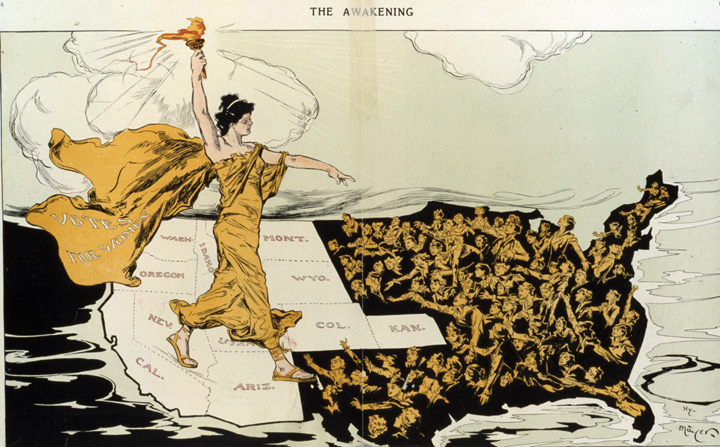The artist who produced this 1915 image entitled “The Awakening” depicts the goddess of liberty marching from the west, where women had secured the right to vote, to the east. The image challenges the contemporary notion that the vector of American progress moved westward.
Alice Paul and Lucy Burns were radicals who also understood the tactical value of conservative arguments in favor of suffrage. They also were unsatisfied with the state-by-state strategy of the NAWSA and convinced the leadership of that organization to establish an organization dedicated to promoting a constitutional amendment extending the vote to all citizens regardless of gender. Paul led this organization, which was known as the Congressional Union. While the NAWSA grew to 2 million members, Paul’s organization was a small group of determined activists who lobbied on behalf of a federal amendment. The NAWSA continued to push for local reform using the successful tactic of minimizing feminist ideas and promoting the vote as a reform measure. Eventually, Paul would abandon the NAWSA for this reason. Her Congressional Union became the National Woman’s Party (NWP) and was free to celebrate women’s equality as the heart of the suffrage issue after leaving the more conservative NAWSA. NWP members held protest marches and directly confronted male leaders who continued to oppose suffrage. Paul and her supporters even picketed the White House and chained themselves to the gates when they were ordered to leave. Their arrest was scandalized by many mainstream suffragists in NAWSA who believed that the NWP was alienating moderate men and women who might otherwise support suffrage. However, the conditions these women faced while in prison generated sympathy and led many undecided women and men that the opponents of women’s suffrage were not genuinely concerned about the plight of women. The arguments and the tactics of the NWP also convinced many on the fence that groups such as the NAWSA were not so radical after all.
By 1912, ten states and/or territories recognized women’s right to vote. In 1913, Illinois granted partial suffrage for women voting in presidential elections, becoming the first state east of the Mississippi to do so. Iowa’s Carrie Chapman Catt took over the NAWSA in 1915 and renewed the effort to pass a constitutional amendment; she also pushed for state-by-state reform. Catt and other NAWSA leaders also began to promote suffrage as both as a natural right belonging to all citizens and as a means of promoting reform, healing the divisions between more radical and conservative ideas within the movement. She and other NAWSA leaders continued to oppose the demonstrations of radicals, yet strongly opposed the violence these women sometimes faced from male hecklers and police. Reports that Alice Paul and other women had been beaten and force-fed after waging a hunger strike put those who opposed suffrage on the defensive. Claiming to oppose suffrage as a matter of “protecting” women from the filth and corruption of the outside world, these beatings of women exposed the hollowness of this brand of “chivalry.”
In 1917, Arkansas and New York become the first Southern and East Coast states to approve suffrage, although Arkansas law restricted the vote to white women in primary elections. The battle continued throughout the South and the East, but even states such as Maine that had strong Progressive tendencies voted down a 1917 women’s suffrage referendum by a two-to-one margin. The failure in Maine reflected the ways that the war had divided voters. Antisuffragists in Maine defeated the measure, largely by arousing populist hostility toward national feminist figures and antiwar leaders. These same campaign methods derailed the rapid progress the suffrage movement had enjoyed and threatened to split the entire movement. However, NAWSA adapted by throwing its support toward the war effort, and the majority of suffragists distanced themselves from leading pacifists. Many women who had opposed America’s entry rallied behind the war effort in ways that “proved” their patriotism. With millions of women in the workforce and tens of thousands serving overseas in various nursing and military auxiliaries, even President Wilson decided it was time to end his opposition to women’s suffrage.
In 1918, a proposed constitutional amendment granting universal suffrage passed Congress with the support of Jeanette Rankin of Montana, the first and only woman in Congress at this time. Even though President Wilson declared the measure vital to the US war effort, conservatives in the Senate defeated the amendment. NAWSA redoubled their efforts to win popular support for the measure, while the NWP and other more radical women increased the political pressure on male politicians who had opposed the measure. Others pointed out that women in most European countries had been granted the right to vote, including Russia in 1917, Britain in 1918, and Germany and Austria by 1919.
Within the United States, thirty states and territories had approved women’s suffrage in at least some elections by 1919, and half of those states recognized the right of women to vote in all elections. As a result, members of the NWP could potentially mobilize women voters against any opponent of women’s suffrage in nearly half of the congressional and senatorial elections that would be held in the future. This single fact more than a gradual recognition of gender equality convinced two-thirds of the Senate to approve a women’s suffrage amendment on June 4, 1919. The next step was the required ratification by at least three-fourths of the states (thirty-six states at this time). After fourteen months of daily activism, Tennessee became the thirty-sixth state to ratify the amendment in August 1920.
Figure 5.29
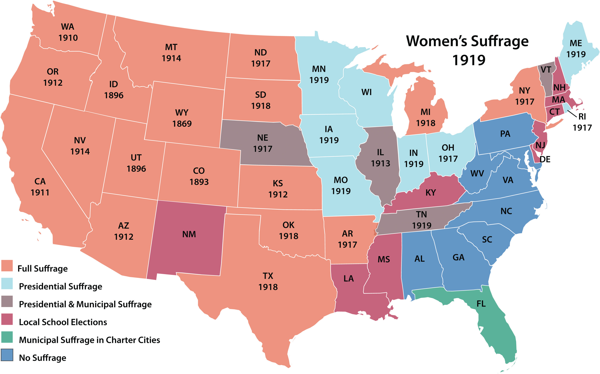This map showing states that had granted full or partial female suffrage by 1919 demonstrates that the success of the Nineteenth Amendment was directly related to activism at the local and state level.
Of all the former Confederate states, only Texas, Arkansas, and Tennessee voted in favor of the Nineteenth Amendment. Conservatives in the South defeated women’s suffrage by comparing it to the expansion of the electorate during Reconstruction. “The southern man who votes for the Susan B. Anthony amendment votes to ratify the Fifteenth Amendment,” declared South Carolina senator Ellison Smith. However, when nearly every state outside of the Deep South voted for ratification, the intrepid efforts of Southern suffragists who had faced down mobs in their failed attempts to secure their rights were finally rewarded. From the perspective of hindsight, it is clear that NAWSA’s calculated sacrifice of its African American members and its explicit rejection of racial unity did little to promote suffrage among white Southerners. In addition, states could still require poll taxes and literacy tests that limited the impact of suffrage for many white and black Southern women. The vote was also withheld from many nonwhite women when federal courts ruled that the Nineteenth Amendment (and the rest of the Constitution) did not apply in overseas colonies. Ironically, women suffrage was adopted by Spain in 1931—just after the women of Puerto Rico secured their right to vote, but prior to women’s suffrage in the Philippines.
By 1920, suffrage had attracted the support of relatively conservative women, leading the more radical and early supporters of suffrage to use a new term to identify themselves and their reformist agenda. Small but influential groups such as a New York women’s organization known as Heterodoxy promoted feminismFeminism is a term that has evolved into a variety of meanings. Among American feminists at the turn-of-the-century, the term feminism referenced one’s belief in complete gender equality beyond tactical gains that might be achieved through specific movements for equal employment, suffrage, or property rights.—a word to describe complete gender equality. For many middle-class women, the privilege of choosing between male candidates once per year was hardly a reprieve from the suffocating comforts of their domestic spheres. The women of Heterodoxy and hundreds of other women’s groups included scientists, scholars, ministers, and businesswomen. They sought equal educational and employment opportunities, an end to gendered assumptions about sexual freedom, and an end to prohibitions against spreading information about birth control. “All feminists are suffragists,” these women explained, “but not all suffragists are feminists.”
A small number of feminists employed as professors and scientists during this era used their skills and training to discredit earlier “scientific” assertions that women were inherently lacking in mental facilities. While other feminists employed logic and rhetoric to argue that women enjoyed all of the talents and capabilities of men, these scholars used the scientific method to debunk myths and demonstrate the scientific veracity of gender equality. For these and other feminists, equality began rather than ended with the ballot box. They argued that women must no longer be defined in ways that assumed that selfless devotion to husband and family was the only aim of womanhood. Many differed, however, when it came to discussing the unique capacities and roles of women in society. While some feminists yearned to abolish traditional gender roles, the majority accepted the basic premise of marriage as a partnership and hoped to give women the freedom to accept or reject traditional gender roles in their own lives.
By the God of Heaven, we are cowards and jackasses if now that the war is over, we do not marshal every ounce of our brain and brawn to fight the forces of hell in our own land.
We return.
We return from fighting.
We return fighting!
Make way for Democracy! We saved it in France, and by the great Jehovah, we will save it in the United Stated of America, or know the reason why.
—W. E. B. Du Bois, The Crisis, May 1919
W. E. B. Du Bois organized a conference attended by Africans and African Americans from fifteen nations that met in Paris during the Treaty of Versailles. These delegates presented their demand that Germany’s African colonies be granted self-determination to form their own independent nations. The demand was consistent with Wilson’s Fourteen Points and the provision in the Treaty of Versailles that granted independence and self-determination to the former residents of Austria-Hungary. However, Wilson and the other delegates ignored these demands, and Germany’s African colonies were simply transferred to the European victors. Americans displayed similar disregard toward the perspectives of women and minorities during and after the war. Committee on Public Information (CPI) propaganda portrayed the United States as an all-white nation where white men served as protectors and white women were virtuous guardians of the home front.
African American men and women shared high expectations that the experiences of war might reorder society along more egalitarian lines. Progressive reformers had speculated that the trials of war would also serve as a crucible for social change, thereby validating the sacrifice of a generation. However, War Department policy still restricted African Americans to segregated units commanded by white officers above the company level. Native Americans were permitted to serve in “white” battalions, but were often grouped together and given the most dangerous assignments. As a result, the mortality rate for Native American troops was more than twice as high as the average for the rest of the military. One of these unofficially segregated units, the 142nd Infantry, was drawn largely from separate units of Native Americans within the Oklahoma and Texas National Guard. The 600 Native Americans of this unit distinguished themselves in combat, and many members were awarded medals by the French for their uncommon valor. Several Native Americans such as the Choctaw were highly valued soldiers within the American Signal Corps, using their indigenous language to send coded messages that only native speakers could decipher. These “code talkers” would become even more crucial to the US war effort in the Second World War.
African Americans experienced severe discrimination in every aspect of the military. After being denied enlistment opportunities when the war began, black men were almost twice as likely as other men to have their request for draft exemption rejected. Review boards attempted to present these statistics as the result of factors other than race. Although they were exaggerated, some aspects of their defense were valid, but even these were simply the result of historic discrimination. For example, because many blacks had been excluded from skilled trades, they were less likely to be eligible for deferments based on the importance of their civilian jobs. Furthermore, many black husbands and fathers were so poor that the low pay enlisted men received would actually increase their family income. Southern review boards often cited this tendency when dismissing exemptions requested by black husbands and fathers, although white men who had dependents were usually granted exemption. One of the most infamous cases of discrimination involved the War Department itself rather than the local draft boards. Claiming that he was medically ineligible, the army attempted to force Lieutenant Colonel Charles YoungThe highest-ranking African American officer at the outbreak of World War I, Charles Young confronted efforts by military officials to force him into retirement. to retire. As the army’s highest-ranking black officer, Young was in a position to command an independent black regiment and would likely be appointed over white officers. However, Young exposed the scheme by riding his horse hundreds of miles to personally oppose the military’s decision and publicly demonstrate his fitness for duty. The army responded by delaying the issue. Young was eventually promoted but was assigned to a segregated training camp in Illinois where he would not be in a position to command white soldiers or officers.
Figure 5.30
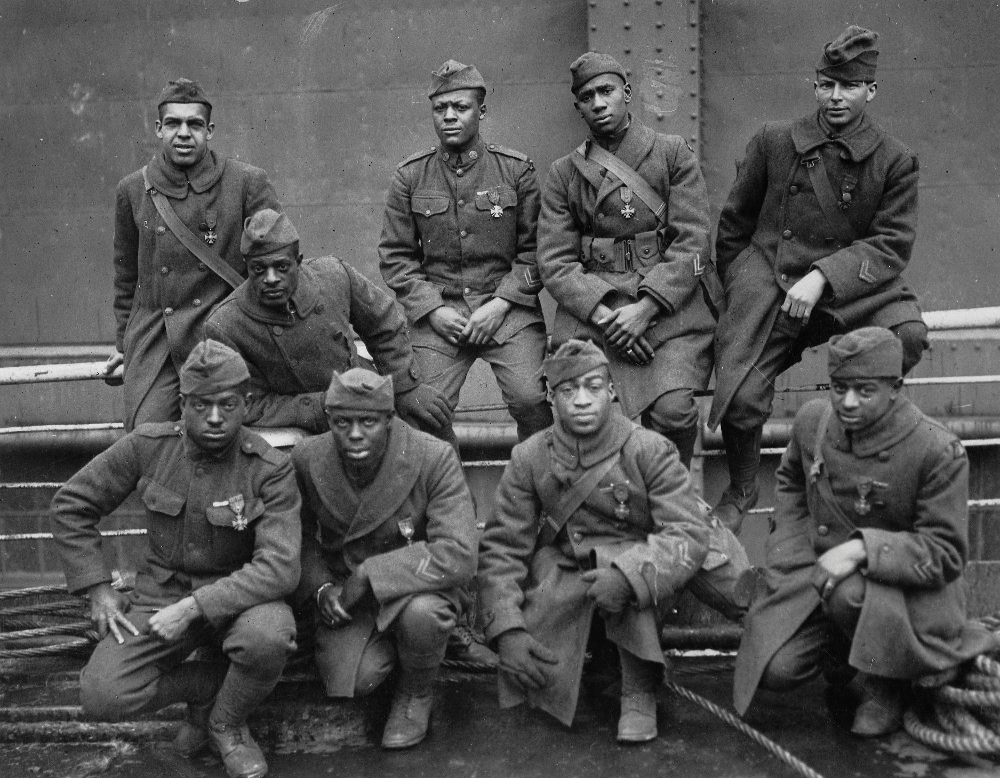These African American soldiers from New York were among those who were awarded medals by the French government for heroism during World War I.
The military also intended to prevent black officers from commanding these segregated units until protests by black communities and the National Association for the Advancement of Colored People (NAACP) led to a compromise. The War Department declared that black men could serve as lieutenants and captains, but white officers would occupy the higher ranks even within all-black battalions, brigades, and divisions. In addition, the army at first intended to appoint relatively few black officers at any level. White military officials predicted that it would be unlikely that more than a select few men of color would ever prove themselves capable of serving as officers, and even fewer that might make them reconsider their position against promoting black men as field-grade officers.
The War Department established a training school for black officers at Fort Des Moines in June 1917. Whites in Des Moines initially protested against the quartering of black troops near their town; however, area black reporters proudly declared that after a few months, the decorum of the men as well as the economic benefits of the camp had led to a much friendlier atmosphere between the townsfolk and the camp leaders. “The people of Des Moines felt at first that they would have to be on their guard against the men at the Negro training camp, and several instances of discrimination were shown,” the African American press of Kansas City reported, “but the camp has won Des Moines.” The camp brought to Iowa and the Great Plains future black leaders such as James B. Morris Sr., a graduate from Howard Law School. After completing officer training and serving in the war, he returned to Des Moines where he served as deputy county treasurer and purchased Iowa’s leading black newspaper, the Iowa Bystander.
Morris was one of nearly half a million African Americans who settled in Northern and Western cities during the war years. This movement was known as the Great MigrationRefers to the movement of 1.5 million African Americans out of the American South between 1910 and 1930. Approximately half a million of these individuals migrated during World War I in order to take advantage of wartime employment in Northern factories. and was especially pronounced in large cities such as St. Louis, Chicago, Cleveland, Detroit, and a host of smaller manufacturing cities such as Gary, Indiana, and Youngstown, Ohio. Black workers faced enormous discrimination while their families had limited options for housing in these segregated Northern and Midwestern cities. However, the opportunity to work in a factory provided upward mobility for these men and their families. Black women were seldom hired in the better-paying jobs that were open to women. However, most who sought work were able to find jobs in domestic service and other fields that were being abandoned by white women. That so many families would move halfway across the country so that a male breadwinner might occupy the toughest and lowest-paid factory jobs demonstrated the continued hardships and limited job opportunities blacks faced in the South. However, a significant number of black men found that the war had also created better job opportunities in leading Southern industrial cities such as Birmingham and Atlanta.
Some black workers were able to secure federal government jobs or positions as laborers in the defense industry, and wages were monitored by the War Industries Board. Within the government’s wartime arsenal, labor contracts made no distinction of race. Unlike white women, black women seldom had the opportunity to change jobs and were limited to taking positions that were previously held by white women or young boys. In many cases, only white women were able to replace white men in the labor force, even within unskilled jobs. As white women entered the war industries, black women backfilled the vacancies left in domestic and industrial service. Although they were often given the oldest and hardest machines to operate, industrial work was welcomed as a change of pace from domestic service by those black women who were able to secure positions. Black women were often segregated from other employees and placed in basements or other undesirable parts of the factories. However, the fact that they were separated encouraged them to develop strong networks of support. Many of these women insisted on and received black supervisors. They registered complaints collectively, and when they felt they were being mistreated, or when they discovered better work elsewhere, they often abandoned their jobs together.
Contemporary observers of black women in industry often failed to recognize these assertive traits as such. Reflecting the narrow-mindedness of their times, critics portrayed black women as ignorant, lazy, unaccountable, and unprepared for wage labor. Recent historians have challenged this interpretation and explained why such a narrow and prejudiced view might have persisted for so many years. In short, racist explanations that assumed black shortcomings were the result of innate character differences justified the status quo and presented the comforting fiction that racism was a problem of the past. This lack of investigation perpetuated the widely held assumption that blacks were denied equal opportunity during and after the war because they were simply a different caste of people. By ignoring an era in which blacks were actively contributing to the nation’s war effort, historians perhaps unconsciously defended a society that continued to deny black citizens equal rights.
Many historic accounts of the home front tell of a homogenous and optimistic nation that was part of a “great pull together” to defeat tyranny abroad. In many ways, these accounts accurately portray the view of many Americans toward the war effort. Contemporary accounts record the collective actions of nearly every aspect of society. Scout troops organized relief drives, while families participated in meatless and wheatless days. The public celebrated the importance of work and dignity of labor. By framing the war as a moral struggle and by viewing labor as an essential contribution to the war effort, citizens on the home front forged a culture that ennobled their work and gave meaning to their sacrifices.
A deeper investigation reveals that the war also created a xenophobic hysteria that led to the creation of internment camps for some resident aliens and suspected enemy sympathizers. Community organizations and even private businesses formed their own investigation bureaus and encouraged citizens and employees to report any disparaging and “un-American” comments or behaviors they observed among their neighbors and fellow workers. The possibility of disloyalty and sabotage created a situation where individual liberty, collective security, and the interests of the government were weighed against one another. In most instances, the rights of the individuals were respected. However, from the perspective of pacifists, Socialists, and other dissenting groups, the war was a time where their views were brutally repressed.
In 1917, Congress passed the Espionage Act, which criminalized a number of behaviors such as seeking to disrupt military recruitment or otherwise hinder the war effort or assist the enemy. A provision that would have enforced government censorship was removed from the bill before it was passed, yet some still believed the law violated principles of individual freedom. Although controversial, the law was repeatedly upheld by federal courts. Fewer would defend the Sedition Act of 1918A notorious law that criminalized speeches that sought to discredit the US government or the US war effort during World War I., which extended the Espionage Act and made criticizing the federal government during a time of war a criminal offense. Largely owing to the short amount of time before the passage of the law and the end of the war, very few were convicted under the terms of the Sedition Act. However, the newly appointed Attorney General A. Mitchell Palmer called on Congress to extend the provisions of the law even after the war ended.
Palmer’s tenure as attorney general coincided with a period of increased concern about the possible spread of Socialism that is today known as the Red ScareA period of increased fear and even widespread paranoia regarding potential threats posed by anarchism and Communism between 1919 and 1920.. During this period, hundreds of leftists and Socialist leaders were arrested with little concern for due process of law. During the war, some Socialists had criticized America’s war effort as an action that merely propped up one group of imperialists against another. From perspective of Lenin and many others, World War I was being waged “to decide whether the British or German group of financial marauders [was] to receive the most booty.” American Socialists generally viewed war as merely a continuation of historical quest for expansion to bolster Capitalism from its own decline. Although few Americans actually joined Socialist organizations, many workers shared their reservations about the sincerity of their government’s claims that the war was being waged on behalf of their freedom. They were especially suspect about those within industry that called on them to work harder and sacrifice more while members of the upper classes drew the greatest profits.
Figure 5.31
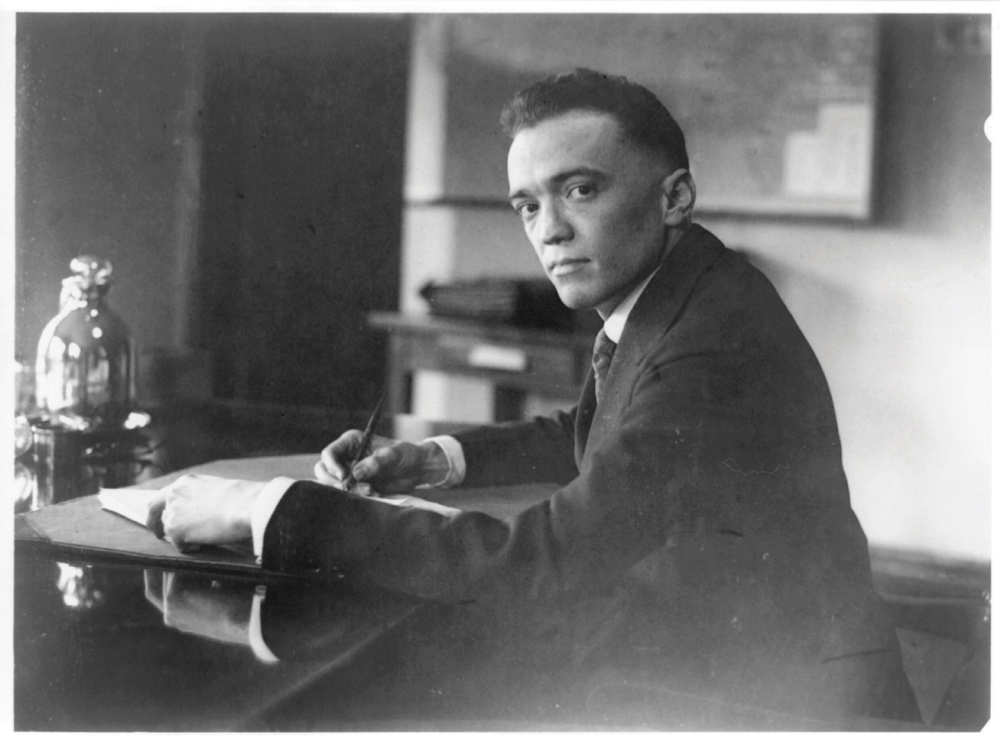J. Edgar Hoover was only twenty-nine years old when this photo was taken in 1924, but he had recently been appointed to head the Bureau of Investigation within the Justice Department.
A small percentage of workers registered as conscientious objectors and sought military deferments. These young men actively challenged widely held assumptions about gender roles and patriotism, adopting in their place a position of pacifist nonconformity that placed them at odds with the society around them. Some of these men lost their jobs, were imprisoned, or were even physically beaten for expressing opinions that were not supported by the government or the majority of Americans. The Bureau of Legal Advice was an organization formed during the war as an advocacy group that sought to protect a wide range of political dissent. While most Americans believed that these individuals had the right to their own opinions, the actions of many dissenters led to difficult decisions about the line between dissent and disloyalty. For example, Emma Goldman and her lover Alexander Berkman were sentenced to two years in jail for conspiring to “induce persons not to register” for the draft. Both had a history of supporting violent anarchism and Berkman had even conspired to murder the president of US Steel.
Berkman’s advocacy of violence was not typical of those on the left, although a wave of bombings by self-styled anarchists in the summer of 1919 furthered the impression of Socialists and other radicals as intrinsically violent. The actions of a right-wing vigilante group that called itself the American Protective League (APL) was also atypical. The APL harassed, spied on, and occasionally assaulted pacifists and Socialists. Attorney General Palmer at first sought to neutralize the potential threat of all radicals who advocated violence, but not long before his Justice Department began to mirror the tactics of the APL. An ambitious twenty-four-year-old recent law school graduate named J. Edgar Hoover was hired to lead a new branch of the Justice Department charged with domestic surveillance of suspected radicals. Hoover’s new agency would eventually expand and become its own bureau—the Federal Bureau of Investigations (FBI).
Hoover and Palmer responded to the perceived threat of Socialist labor leaders, as well as black civil rights leaders who were beginning to sound more militant by conducting quasi-legal raids, illegal surveillance operations, and unconstitutional mass arrests where individuals were detained for simply being a member of a particular leftist organization. The mass arrests became known as the Palmer RaidsA series of legal and extralegal raids on suspected labor organizers, leftists, and political dissidents in the United States after World War I. US attorney general A. Mitchell Palmer was convinced that such methods were necessary to prevent the spread of dangerous radical ideas and organizations. He approved the use of controversial surveillance tactics by Department of Justice officials, including a young assistant named J. Edgar Hoover. and remain one of the most dramatic examples of the potential excesses of federal law enforcement in American history. Although Palmer originally enjoyed the support of Congress and the public, his department’s illegal surveillance methods and mass arrests soon led to greater skepticism about the actual danger of black radicals and political dissidents. Although Palmer made efforts to limit some of his department’s excesses and even recommended the pardon of the increasingly radical Eugene Debs, Palmer’s declaration that militant Socialists were planning to launch a nationwide revolution on May 1, 1919, made many Americans reconsider their fears of anarchists and radicals when no violence occurred on that day.
Figure 5.32

This collage of newspaper reports describes the labor conflict leading up to the Bisbee Deportation. The mining companies and local government officials herded striking miners onto cattle cars destined for Columbus, New Mexico, the same community that had recently been sacked by Pancho Villa.
The Red Scare was more than an overzealous response by the federal government to the threats and deeds of a few militant radicals. It also had important economic ramifications as the Justice Department moved to isolate union leaders by labeling them as “Reds” who were anti-American and loyal only to Russia. Using loosely constructed allegations of political disloyalty, Palmer used the power of the federal government to halt a nationwide strike of coal miners in November 1919. Two years prior to Palmer’s action on behalf of coal operators, state officials in Arizona had used similar accusations of disloyalty to justify their intervention on behalf of the operators of copper mines. The International Workers of the World (IWW) had organized thousands of copper miners in and around Bisbee, Arizona, and were waging an effective strike in the summer of 1917. Their opponents declared that the leaders of the IWW were part of a Communist and/or pro-German conspiracy to spread labor discontent. City and state authorities sided with the mining companies and rounded up the leaders of the movement along with a thousand IWW supporters. In what became known as the Bisbee Deportation of 1917, these former copper miners were effectively kidnapped and abandoned at a railroad depot in the New Mexico dessert. Had it not been for the intervention of local residents and the US Army, which built a refugee camp for the workers, the government’s deportation order might have become a death sentence.
One of the most significant labor strikes in US history erupted in February 1919 and was likewise influenced by the anti-Ccommunist hysteria of the era. Shipyard workers throughout Seattle had long been promised that they would receive pay raises once the government ended its wartime price controls. Because companies could not charge market prices for a number of goods, employers explained, workers would not receive the kinds of pay raises that would naturally occur during a wartime boom. When the war ended and the government ended its policy of price controls, however, the long-expected raises failed to materialize. In response, nearly 40,000 workers in the region’s shipyards went on strike. These men and women were joined by an additional 25,000 union members throughout the city who engaged in what became known as a “sympathy strike.” Until the shipyard workers received the raises they had been promised, most members of the city’s 110 local unions vowed that they too would not report for work.
The Seattle General Strike of 1919 had profound implications regarding the potential impact of strikes and worker solidarity. If successful, labor advocates and opponents both predicted, other cities would experience similar strikes and the balance of power between labor and capital might forever be altered. Those who opposed the strikes predicted that a wave of general strikes would destroy the foundation of America’s modern economy and open the door to anarchy. However, conditions in Seattle during the strike were remarkably calm. Because most stores and streetcars were no longer being operated, thousands of union members voluntarily provided essential services such as food delivery and garbage collection. Whether these informal measures would have been adequate in preventing civil unrest and hardship is unknown. The mayor effectively declared martial law and threatened to use federal troops to arrest those who refused his order to go back to work. As dozens of labor leaders were arrested and the prolabor newspaper was seized by local police, the strike quickly ended. Federal troops were not sent to Seattle, as the strike itself lasted less than a week. Most Americans believed that the government’s heavy-handed methods were justified in order to prevent “Bolshevism” from spreading to America. This reaction was representative of the change in public opinion from Progressivism to a more conservative political orientation that would typify the 1920s.
Many of the labor strikes that occurred during and immediately after World War I were crushed by state and federal agencies. However, continued activism demonstrated that working-class Americans did more than experience a significant increase in their income during the war—they also raised their expectations and were more willing to demonstrate on behalf of their rights as workers. The wartime boom also initiated a rising economic standard that would expand during the 1920s, survive the Great Depression, and continue after World War II. Government involvement during the war had lasting consequences in convincing employers to recognize worker’s demands before strikes occurred. That the government might also intervene on behalf of workers demonstrated the importance of mobilizing the political potential of union members. During the war, business leaders were forced to recruit workers; recruitment helped to establish new trends favoring the spread of employee benefits and Progressive reforms such as the eight-hour day. Although the end of the war reduced the advantage some workers and unions had enjoyed, many business leaders had concluded that a degree of voluntary reform could bring greater efficiency and higher output. They also recognized that these reforms might help to prevent the spread of labor unions—something that became one of the leading goals of business leaders in the decades that followed.
The war put new stresses on US institutions and challenged notions of race and gender. Discrimination based on race, class, and gender was largely unaffected by the war although the expectations of women, workers, and minorities were not left unchanged. The result was both an increase in civil rights activism and an intensification of alienation and despair among those who continued to endure discrimination. While government propaganda masked the separateness of experience based on race, class, and gender, the realities of life for most Americans were still largely determined by these categories. By placing greater stresses on unity as a form of patriotic expression, however, the government helped to further the image that discrimination was contrary to the ideals the nation was fighting to defend.
In a number of instances, white and black women came together to advance their common interest in promoting suffrage. However, most women failed to bridge the racial divide in ways that reflected the culture of the early twentieth century. Race would prove to be the most significant obstacle limiting the unity of the suffrage movement since white and minority women generally belonged to separate organizations that only occasionally and tentatively worked together. However, through the efforts of a diverse range of local and national suffrage organizations and groups such as the National Association of Colored Women’s Clubs, women would secure their right to vote through the Nineteenth Amendment to the Constitution in 1920. In the meantime, cities and states were the front line in the battle for votes for women. Although the Progressives focused many of their efforts at reform through the federal government, the lives of Americans were still more impacted by the decisions of state and municipal governments. As a result, these early suffrage victories were significant both in their own right and in influencing male political leaders of these states to support women’s suffrage on a national scale. The Nineteenth Amendment was passed and ratified by men only after women had secured the right to vote locally in many communities. While some male Progressives supported the Nineteenth Amendment as a matter of equality, most did so only to avoid alienating large and empowered groups of women who cast votes in local elections.
The Western Allies might have been able to win the war without US troops, but they could not have even continued the war into 1918 without the food US farmers produced. Once they finally arrived in France, US troops were equally dependent on foreign-made artillery and other materials, as well as support provided by the British and French. After a failed German offensive in the spring of 1918 and the arrival of over a million US troops, the Allied Powers seized the momentum and began pushing German forces eastward. German propaganda and government-censored newspapers made light of these developments, leading many Germans to wonder why their armies surrendered, even as the bulk of German forces were still in Belgium and France. Adolf Hitler was a soldier in the German army at this time and would later espouse the belief that his nation had somehow been betrayed by cowardly or even traitorous leaders. In reality, German military leaders had expended their supplies in the failed offensive of 1918. The most thoughtful among them recognized that the best they could hope for by November 1918 was to somehow form a line of defensive fortifications that was too deep for the Western Allies to ever overrun. If successful, this combat operation would return to the status quo of 1917, and the war of attrition would continue indefinitely even as millions of US troops entered the fight. As a result, the decision to surrender, even though Germany still held enemy territory, was one that prevented further suffering and the continuation of a war that Germany might prolong indefinitely but never win.
Andrews, Thomas G. Killing for Coal: America’s Deadliest Labor War (2008).
Early, Frances H. A World Without War: How US Feminists and Pacifists Resisted World War I (1997).
Ellis, Mark Race, War, and Surveillance: African Americans and the United States Government During World War I (2001).
Farwell, Byron. Over There: The United States in the Great War, 1917–1918 (1999).
Feurer, Rosemary, Radical Unionism in the Midwest, 1900–1950 (2006).
Greenwald, Maurine Weiner. The Impact of World War I on Women Workers in the United States (1980).
Johnson, Jeffrey A. “They Are All Red Out Here”: Socialist Politics in the Pacific Northwest, 1895–1925 (2008).
Kennedy, David M. Over Here: The First World War and American Society (1980).
McGerr, Michael. A Fierce Discontent: The Rise and Fall of the Progressive Movement in America, 1870–1920 (2005).
Murphy, Kevin. Political Manhood: Red Bloods, Mollycoddles, and the Politics of Progressive Era Reform (2010).
Recchiuti, John Louis. Civic Engagement: Social Science and Progressive-Era Reform in New York City (2006).